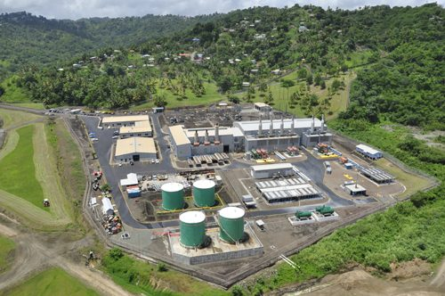
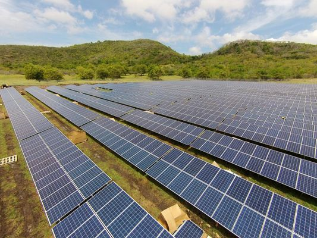
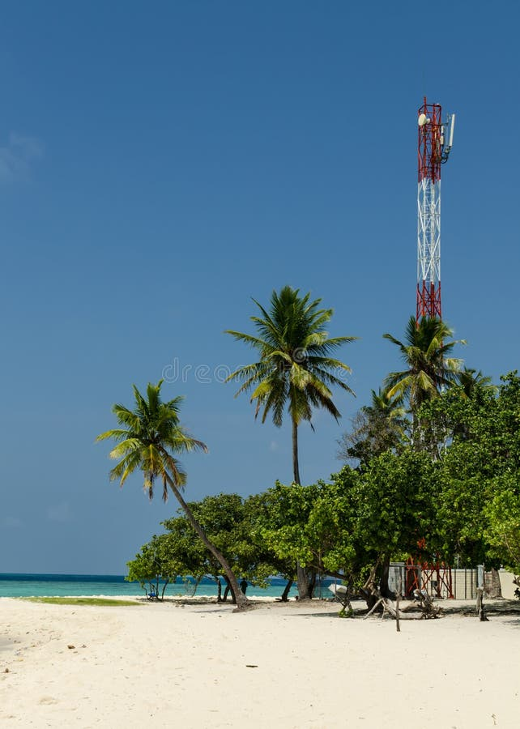
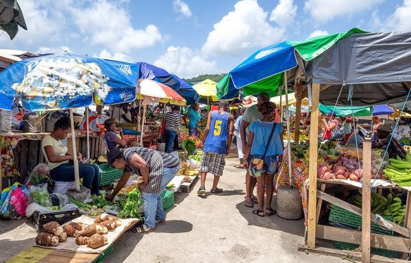
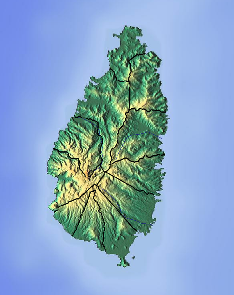
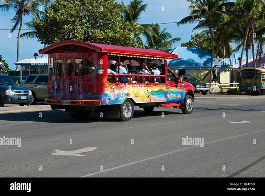
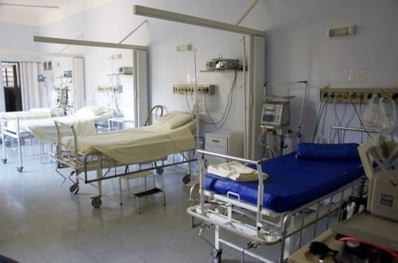
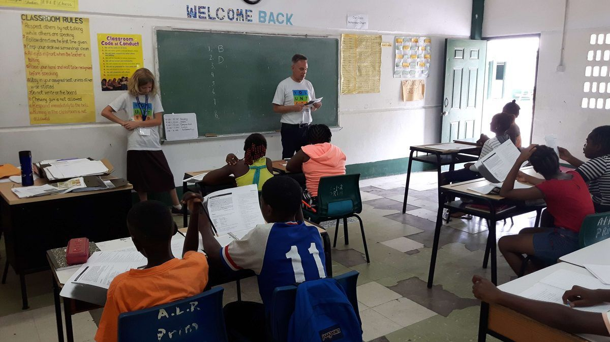

Aylik B�t�e �zeti (USD)
| Gider | Tek Kisi (M�tevazi) | Tek Kisi (Konforlu) | 4 Kisilik Aile (M�tevazi) | 4 Kisilik Aile (Konforlu) |
|---|---|---|---|---|
| Kira | $500 | $1,000 | $900 | $2,000 |
| Elektrik | $74 | $167 | $148 | $250 |
| Su | $30 | $44 | $50 | $60 |
| Internet | $50 | $74 | $60 | $100 |
| Cep Telefonu | $37 | $56 | $74 | $111 |
| Market Alisverisi | $400 | $600 | $1,000 | $1,500 |
| Disarida yemek | $100 | $300 | $200 | $500 |
| Ulasim | $74 | $259 | $259 | $500 |
| Saglik | $100 | $150 | $250 | $400 |
| Egitim | — | — | $300 | $1,000 |
| Eglence | $74 | $200 | $150 | $300 |
| Ev yardimcisi | — | $148 | — | $592 |
| �esitli | $100 | $200 | $200 | $300 |
| TOPLAM (USD/ay) | ~$1,539 | ~$3,198 | ~$3,591 | ~$7,613 |
T�m tutarlar USD cinsindendir. XCD d�n�s�m�: 2,70 ile �arpin. Araliklar konum ve yasam tarzi tercihlerini yansitir. Rodney Bay / Cap Estate en pahali b�lgelerdir. Referans olarak ortalama yerel net maas: ~USD $830/ay.
Konut & Kira

Rodney Bay / Gros Islet (Birincil Yabanci B�lgesi)
| M�lk T�r� | Aylik (XCD) | Aylik (USD) |
|---|---|---|
| 1 yatak odali daire | $2,000–$3,000 | $735–$1,100 |
| 2 yatak odali daire | $2,700–$4,050 | $1,000–$1,500 |
| 3 yatak odali sehir evi | $4,050–$6,750 | $1,500–$2,500 |
| 3 yatak odali ev | $5,400–$8,100 | $2,000–$3,000 |
| 4 yatak odali villa (Cap Estate) | $6,500–$13,500 | $2,400–$5,000 |
Castries (Baskent)
| M�lk T�r� | Aylik (XCD) | Aylik (USD) |
|---|---|---|
| 1 yatak odali daire (sehir merkezi) | $1,350–$1,800 | $500–$670 |
| 1 yatak odali daire (merkez disi) | $875–$1,350 | $325–$500 |
| 2 yatak odali daire (sehir merkezi) | $1,800–$2,700 | $670–$1,000 |
| 3 yatak odali daire (sehir merkezi) | $2,400–$3,375 | $890–$1,250 |
| 3 yatak odali ev | $2,700–$5,400 | $1,000–$2,000 |
Soufriere (G�neybati, Pitons yakini)
| M�lk T�r� | Aylik (XCD) | Aylik (USD) |
|---|---|---|
| 1 yatak odali daire | $1,080–$1,620 | $400–$600 |
| 2 yatak odali daire/ev | $1,620–$2,700 | $600–$1,000 |
| 3 yatak odali ev | $2,160–$4,050 | $800–$1,500 |
Vieux Fort (G�ney, Hewanorra Havalimani yakini)
| M�lk T�r� | Aylik (XCD) | Aylik (USD) |
|---|---|---|
| 1 yatak odali daire | $810–$1,350 | $300–$500 |
| 2 yatak odali daire/ev | $1,350–$2,160 | $500–$800 |
| 3 yatak odali ev | $1,620–$2,700 | $600–$1,000 |
Kiralama Ipu�lari
- Rodney Bay en y�ksek kiralari talep eder — restoranlar, gece hayati, plaja yakinlik
- Vieux Fort en uygun fiyatli b�lgedir; daha az gelismis ancak hizla b�y�yor
- Mobilyali daireler genellikle mobilyasizlardan %20–30 daha pahalidir
- Kira s�zlesmeleri genellikle 6–12 ay olup, 1–2 aylik depozito arti ilk ay kira gerektirir
- Faturalar genellikle kiraya dahil degildir
- Cap Estate ve Rodney Bay en pop�ler yabanci yerlesim b�lgeleridir
Gayrimenkul Satin Alma Fiyatlari
T�re G�re M�lk Fiyatlari
| M�lk T�r� | Fiyat (XCD) | Fiyat (USD) |
|---|---|---|
| K���k baslangi� evi (kirsal) | $405,000+ | $150,000+ |
| 2 yatak odali daire (giris seviyesi) | $540,000–$810,000 | $200,000–$300,000 |
| 3 yatak odali villa (orta segment) | $1,080,000–$1,350,000 | $400,000–$500,000 |
| Deniz kiyisi sehir evi | $1,755,000–$1,890,000 | $650,000–$700,000 |
| L�ks daire (The Landings) | $2,295,000–$5,400,000 | $850,000–$2,000,000 |
| Sahil l�ks villa | $2,700,000–$16,200,000+ | $1,000,000–$6,000,000+ |
B�lgeye G�re Arsa Fiyatlari (Metrekare Basina)
| Konum | XCD / ft² | USD / ft² |
|---|---|---|
| Rodney Bay (premium) | $27–$540+ | $10–$200+ |
| Cap Estate | $22–$81 | $8–$30 |
| Marigot Bay | $20–$95 | $7.50–$35 |
| Castries | $11–$540 | $4–$200 |
| Soufriere | $16–$54 | $6–$20 |
| Vieux Fort | $11–$32 | $4–$12 |
| Laborie | $16–$27 | $6–$10 |
| Dennery (Dogu Kiyisi) | $11–$16 | $4–$6 |
| Choiseul | $8–$22 | $2.80–$8 |
| Monchy (kirsal) | $8–$22 | $3–$8 |
Insaat Maliyetleri (Yeni Yapi, 2025)
| Kalem | Maliyet (XCD) | Maliyet (USD) |
|---|---|---|
| Standart insaat (ft² basina) | $300 | $111 |
| Orta segment (ft² basina) | $300–$400 | $111–$148 |
| L�ks (ft² basina) | $450+ | $167+ |
| 2.000 ft² standart ev (toplam) | $600,000–$1,300,000 | $222,000–$481,000 |
| Imar izni | $3,000–$7,500 | $1,111–$2,778 |
| Mimari hizmetler | Insaat maliyetinin %5–10'u | |
| M�teahhit �cretleri | Toplam projenin %10–20'si | |
Yabanci Alicilar I�in Islem Maliyetleri
| Kalem | Maliyet |
|---|---|
| Yabanci Arazi Edinme Lisansi | Gerekli (devlet �creti uygulanir) |
| Damga Vergisi | M�lk degerinin ~%2'si |
| Hukuki �cretler | Satin alma fiyatinin %1,5–3'� |
| Emlak komisyoncusu komisyonu | %5 (genellikle satici tarafindan �denir) |
| Ipotek faiz orani (tipik) | ~%7,75 sabit, 20 yil |
Yabanci Alicilar
Yabancilarin m�lk satin almak i�in Yabanci Arazi Edinme Lisansina ihtiyaci vardir (CBI programi araciligiyla satin alma durumu hari�). Toplam islem maliyetleri i�in satin alma fiyatinin �zerine yaklasik %10–15 b�t�e ayirin. M�lk satislarinda sermaye kazanci vergisi yoktur.
Faturalar
Elektrik (LUCELEC — Tek Saglayici)
 | Kullanim Kademesi | Oran / kWh (XCD) | Oran / kWh (USD) |
|---|---|---|
| Ilk 1–180 kWh/ay | $0,855–$0,914 | $0,32–$0,34 |
| 181 kWh/ay �zeri | $0,905–$0,964 | $0,34–$0,36 |
| Aylik Fatura Tahmini | XCD | USD |
|---|---|---|
| K���k daire (klimasiz) | $150–$250 | $55–$93 |
| Orta daire (kismen klimali) | $250–$500 | $93–$185 |
| B�y�k ev (d�zenli klima) | $500–$810 | $185–$300 |
Su (WASCO)
| Hane B�y�kl�g� | Aylik (XCD) | Aylik (USD) |
|---|---|---|
| K���k hane | $80–$120 | $30–$45 |
| Orta hane | $120–$160 | $45–$60 |
| B�y�k hane / bah�e kullanimi | $160–$270 | $60–$100 |
WASCO Su Temini Endiseleri (2025–2026)
- Ekim–Kasim 2025 su kesintileri: Adanin bazi b�lgeleri kuraklik kosullari ve eskiyen altyapi nedeniyle su kesintileri yasadi. Evlerde su depolama tanklari sarttir
- John Compton Baraji boru hatti degisimi: 5 km'lik boru hatti degisimi i�in US$22,8M CDB kredisi onaylandi. Insaatin 2026 2. �eyrekte baslamasi bekleniyor
- Patience Su Temini Yenileme: Devam eden b�y�k altyapi projesi, Aralik 2026'da tamamlanmasi bekleniyor
Tavsiye: T�m evlerde (�zellikle y�ksek veya g�ney b�lgelerde) su depolama tanki bulunmalidir (asgari 500–1.000 galon). Su basinci b�lgeye ve g�n�n saatine g�re degisir.
Internet (Flow & Digicel)
| Plan | Aylik (XCD) | Aylik (USD) |
|---|---|---|
| Temel genis bant (~50 Mbps) | $120–$162 | $45–$60 |
| Orta seviye (~100–200 Mbps) | $162–$270 | $60–$100 |
| Y�ksek hizli fiber (250 Mbps) | $367 | $136 |
| Premium fiber (400+ Mbps) | $405–$540+ | $150–$200+ |
| Starlink uydu (sinirsiz) | $216 | $80 |
Cep Telefonu Planlari
| Plan | Aylik (XCD) | Aylik (USD) |
|---|---|---|
| Digicel 30 G�nl�k Prime More (40 GB) | $149 | $55 |
| Digicel 30 G�nl�k Prime Extra (60 GB) | $256 | $95 |
| Flow 30 G�nl�k (12 GB) | $100 | $37 |
| Ortalama aylik plan (Numbeo) | $101 | $37 |
Elektrik Pahalidir
Saint Lucia'nin elektrik tarifeleri, dizel �retimi nedeniyle Karayipler'deki en y�ksek tarifeler arasindadir. Klima en b�y�k maliyet kaynagidir. Tavan vantilat�rleri ve dogal havalandirma kullanin. G�nes panelleri giderek pop�lerlesmektedir — LUCELEC �ati g�nes panelleri i�in net faturalandirma programi sunmaktadir. Flow, Mayis 2025'te genis bant fiyatlarini ~EC$3/ay artirmistir.
Yiyecek & Yemek
Market Fiyatlari (Numbeo, Ocak 2026)
| �r�n | Fiyat (XCD) | Fiyat (USD) |
|---|---|---|
| S�t (1 litre) | $6,03 | $2,23 |
| Beyaz ekmek (b�t�n) | $3,67 | $1,36 |
| Beyaz pirin� (1 lb) | $2,06 | $0,76 |
| Yumurta (d�zine) | $11,32 | $4,19 |
| Tavuk fileto (1 lb) | $15,46 | $5,73 |
| Dana eti (1 lb) | $21,35 | $7,91 |
| Muz (1 lb) | $2,21 | $0,82 |
| Domates (1 lb) | $10,24 | $3,79 |
| Patates (1 lb) | $5,13 | $1,90 |
| Sogan (1 lb) | $3,24 | $1,20 |
| Yerli bira (Piton, 0,5L) | $5,79 | $2,14 |
| Sise su (1,5L) | $2,79 | $1,03 |
| Sarap sisesi (orta segment) | $33,50 | $12,41 |
Aylik Market B�t�esi
| Kategori | Aylik (XCD) | Aylik (USD) |
|---|---|---|
| Tek kisi (b�t�e, yerel gida) | $945–$1,350 | $350–$500 |
| Tek kisi (karma yerel/ithal) | $1,350–$1,890 | $500–$700 |
| 4 kisilik aile (b�t�e) | $2,430–$3,375 | $900–$1,250 |
| 4 kisilik aile (konforlu) | $3,375–$4,725 | $1,250–$1,750 |
Restoran Fiyatlari
| Yemek Seviyesi | Kisi Basi (XCD) | Kisi Basi (USD) |
|---|---|---|
| Sokak yemegi / yemek tezgahi | $10–$20 | $3,70–$7,40 |
| Ekonomik restoran | $21 | $7,80 |
| Orta segment restoran | $50–$70 | $18,50–$25,90 |
| Orta segment (2 kisi, 3 �esit) | $200 | $74 |
| Fine dining (kisi basi) | $80–$215 | $30–$80 |
| Cappuccino | $9,40 | $3,48 |
| Yerli bira (bira bardagi) | $7,50 | $2,78 |
Yemekte Tasarruf Edin
S�permarket fiyatlarinin �ok altinda taze yerel �r�nler i�in Castries Merkez Pazari'ndan alisveris yapin. Dennery veya Anse la Raye'de balik�ilardan balik alin. Yerel meyveler (mango, muz, ekmek meyvesi, dasheen, plantain, hindistan cevizi) bol ve ucuzdur. Ithal �r�nler (tahil gevregi, peynir, islenmis gidalar, sarap) Kuzey Amerika'ya kiyasla %50–100 daha pahalidir.
Ulasim
 Ara� Satin Alma
| Araç Türü | Fiyat (XCD) | Fiyat (USD) |
|---|---|---|
| İkinci el araba (temel, ör. Honda Fit) | $27,000+ | $10,000+ |
| İkinci el araba (orta segment, ör. Honda CR-V) | $54,000–$108,000 | $20,000–$40,000 |
| Yeni araç (ithal) | $81,000–$162,000+ | $30,000–$60,000+ |
Toplu Taşıma Minibüs Sistemi
Minibüsler Saint Lucia’da toplu taşımanın temel aracıdır ve “dolunca-git” esasına göre çalışır (sabit tarife yoktur). “M” ön ekli yeşil plakaları arayın. El sallayarak durdurun; beton duraklar düzenli noktaları belirtir. Minibüsler tüm güzergahlar için Castries Ulaşım Merkezi’nden (Merkez Pazarın arkasında) hareket eder.
| Detay | Bilgi |
|---|---|
| Ücret aralığı | Güzergaha bağlı olarak EC$1,25–$10 |
| Castries – Rodney Bay | EC$2,50 |
| Castries – Gros Islet | EC$3,50 |
| Castries – Vieux Fort | EC$8,00–$10,00 |
| Castries – Soufriere | EC$9,00–$10,00 |
| Castries – Dennery | EC$6,00–$7,00 |
| Çalışma saatleri | ~06:00–22:00 (uzun mesafe güzergahlar 16–17:00’da sona erer); Pazar/tatil günleri çok sınırlı hizmet |
| Ödeme | Yalnızca nakit (bozuk para yardımcı olur). İnerken şoföre veya muavine ödeyin |
| Sıklık | Kuzey güzergahlar (Castries–Rodney Bay): her 5–15 dk. Güney/kırsal: her 30–60 dk |
Yeni Gelenler İçin Minibüs İpuçları
- Binerken şoföre gideceğiniz yeri söyleyin — şoför inmeniz gerektiğinde sizi uyaracaktır
- Durmanız gereken yere yaklaşırken “stopping” deyin veya tavana/cama vurun
- Minibüslerde yüksek sesle müzik çalar (soca, dancehall) — bu normaldir ve kültürün bir parçasıdır
- Yoğun saatlerde (07:00–08:30, 16:00–17:30) otobüsler hızla dolar. Ayakta yolculuk bekleyin
- Çoğu destinasyona Pazar günü otobüs hizmeti yoktur; buna göre plan yapın veya taksi ayarlayın
- Güzergah numaraları tutarlı biçimde gösterilmez — binmeden önce şoföre otobüsün gideceğiniz yere gidip gitmediğini sorun
Taksiler & Araç Paylaşımı
Lisanslı taksilerin “TX” ön ekli açık mavi plakaları vardır. Taksiler taksimetresiz çalışır — yolculuğa başlamadan önce ücreti her zaman kararlaştırın. Ödeme çoğu durumda nakit yapılır.
| Güzergah | Ücret (XCD) | Ücret (USD) |
|---|---|---|
| UVF (Hewanorra) – Castries | ~$230 | ~$85 |
| Castries – Soufriere | ~$245 | ~$90 |
Araç Paylaşımı: Uber/Lyft Yok
Uber ve Lyft Saint Lucia’da faaliyet göstermez. Allez uygulaması, GPS tabanlı, nakitsiz araç çağırma hizmeti sunan yerel bir alternatiftir, ancak kapsamı çoğunlukla adanın kuzey kısmındadır. Taksiler Castries’te bol ancak kırsal alanlarda azdır.
Mukimler İçin Taksi İpuçları
- Binmeden önce ücreti her zaman kararlaştırın. Taksimetre yoktur; ücretler hükümetin belirlediği bölge tarifelerine dayalıdır ancak pazarlık yaygındır
- Lisanslı taksiler: “TX” ön ekli açık mavi plakalar. Güvenlik için yalnızca lisanslı taksileri kullanın
- Otel taksileri genellikle yol kenarı taksilerden %20–30 daha pahalıdır ancak daha güvenilirdir
- Havalimanı transferleri: Oteliniz aracılığıyla önceden rezervasyon yaptırın veya Hewanorra Havalimanı çıkışındaki resmi taksi görevlisini kullanın
- Gece ek ücreti: 22:00’dan sonra %20–50 daha yüksek ücretler bekleyin
- Bahşiş: Taksi şoförleri için zorunlu değildir, ancak ücreti yuvarlamak takdir edilir
- Uzun vadeli anlaşmalar: Mukimler genellikle daha iyi fiyatlar sunan düzenli bir taksi şoförüyle ilişki kurar. Komşulara veya meslektaşlara öneri sorun
Ehliyet & Gereksinimler
| Gereksinim | Detaylar |
|---|---|
| Geçici sürücü belgesi | EC$54 (US$20), 3 ay geçerli. Tüm ziyaretçiler ve yeni mukimler için gereklidir. Kiralama acentelerinden, polis karakollarından veya havalimanından alınabilir |
| Yerel ehliyet | İkamet sonrası Ehliyet Kurumu’na (Sans Souci, Castries) başvurun. Yazılı sınav + uygulamalı sürüş sınavı. Ehliyet 1–3 yıl geçerli |
| Uluslararası Sürücü Belgesi (IDP) | İlk 3 ay boyunca ulusal ehliyetinizle birlikte kabul edilir. 3 aydan sonra yerel ehliyet veya geçici belge gereklidir |
| Asgari sürüş yaşı | 17 yaş |
| Ehliyet sınıfları | Sınıf A (motosiklet), Sınıf B (3.500 kg’a kadar otomobil), Sınıf C (kamyon), Sınıf D (otobüs), Sınıf E (ağır kombinasyon) |
| Trafik yönü | Soldan trafik (İngiliz sistemi). Çoğu araç sağ direksiyonludur (Japonya’dan ithal) |
| Emniyet kemeri yasası | Sürücü ve ön koltuk yolcusu için zorunlu. Ceza: EC$500 |
| Alkollü araç kullanma sınırı | %0,08 BAC (Kan Alkol Düzeyi). Özellikle hafta sonları rastgele nefes testi kontrol noktaları |
Yol Koşulları & Sürüş
| Detay | Bilgi |
|---|---|
| Trafik yönü | Soldan trafik (İngiliz sistemi) |
| Geçici sürücü belgesi | US$20 (3 ay geçerli) — havalimanından veya kiralama şirketinden |
| Hız sınırları | Şehir içi 15–25 km/s, kırsal 50 km/s, otoyol 65 km/s |
| Kuzey otoyolu | Castries–Choc arasi 4 şeritli, genel olarak iyi |
| Güney/kırsal yollar | Dar, virajlı, dik, bazı çukurlar |
| Yoğun saatler | 07:15–08:30, 16:15–17:30 (Castries kuzeyi en kötüsü) |
| Castries – Vieux Fort | 58 km, ~55 dakika |
Adalar Arası Feribot Hizmetleri
Saint Lucia, bölgesel uçuşlara alternatif olarak feribot hizmetleriyle komşu adalara bağlıdır.
| Güzergah / Operatör | Ücret (Tek Yön) | Süre | Notlar |
|---|---|---|---|
| L’Express des Iles (Castries ↔ Fort-de-France, Martinik) | ~EC$270–$350 (US$100–$130) | ~1,5 saat | Katamaran feribot, haftada 3–4 sefer. Pasaport gerekli (uluslararası geçiş). Erken rezervasyon yapın — festivallerde dolar |
| L’Express des Iles (Castries ↔ Roseau, Dominika) | ~EC$350–$450 (US$130–$167) | ~3,5 saat | Daha az sıklıkta hizmet, genellikle Martinik veya Guadeloupe üzerinden |
| Jaden Sun / Val’Ferry (Castries ↔ Martinik) | ~EC$250–$310 (US$93–$115) | ~1,5 saat | Mevsimsel operatörler. Tarifeleri kontrol edin — hizmet seviyeleri değişir |
Feribot İpuçları
- Yoğun sezon (Ara–Nis) ve festival dönemlerinde (Karnaval, Caz) önceden çevrimiçi rezervasyon yapın
- Pasaportunuzu yanınıza alın — bunlar göç işlemleri gerektiren uluslararası geçişlerdir
- Adalar arasındaki kanalda deniz sert olabilir; deniz tutması ilacı önerilir
- Feribot terminali Castries Limanı’ndadır (La Place Carenage bölgesi)
Su Taksileri & Bisiklet
Su taksileri: Öncelikle havalimanı transferleri, düzenli yolcu hizmeti değil. FunToSee Island ve Hewanorra Express, UVF’den Rodney Bay’e manzaralı kıyı rotaları sunar (~45 dk, kişi başı US$100–$150). Soufriere günlük gezileri için de mevcuttur. Bisiklet: Altyapı minimumdur; dar yollar ve agresif sürücüler nedeniyle işe gidiş-geliş için önerilmez. Başlıca Cap Estate ve Anse Mamin çevresinde kuzeyde 14 rekreasyon rotasi mevcuttur.
Yakıt Fiyatları (Ocak 2026)
| Yakıt Türü | Fiyat (XCD/litre) | Fiyat (USD/litre) |
|---|---|---|
| Benzin | $2,73 | ~$1,01 |
| Dizel | $3,52 | ~$1,30 |
Kaynaklar: Saint Lucia Turizm Otoritesi (Ulaşım), GoByTaxi, ECCB Yakıt Fiyat Takipçisi Ocak 2026, L’Express des Iles, Saint Lucia Ehliyet Kurumu, RSLPF Trafik Bölümü.
Araç İthalat Vergileri
Motor hacmine bağlı olarak %35–50 ithalat vergisi + %20,5–85 özel tüketim vergisi. 3.000cc üzeri araçlardaki toplam vergiler %125’e ulaşabilir. Popüler markalar: Toyota, Honda, Suzuki (birçoğu Japonya’dan ithal). İthalat sürecinden kaçınmak için yerel satın alma düşünün.
Araç Kiralama Özeti
- Adada 64 operatör — uluslararası (Hertz, Avis, Budget, Sixt) ve yerel (SunCars, Cool Breeze, Drive-A-Matic)
- Küçük araba: ~US$61/gün; SUV: ~US$89/gün. Haftalık tarifeler %15–25 tasarruf sağlar
- Soldan trafik (İngiliz tarzi). Geçici sürücü belgesi gerekli (XCD $54 / USD $20, 3 ay geçerli)
- Yollar virajlı ve dağlıktır, özellikle batı kıyısında. Soufriere güzergahı için SUV önerilir
- Castries trafigi yoğun saatlerde ağır olabilir. Merkez Castries’te park sınırlıdır
- CDW (Çarpışma Hasar Muafiyeti): Genellikle günde US$15–$25 ekstra. Kredi kartınızın teminat sağlayıp sağlamadığını kontrol edin
- Yakıt politikası: Çoğu acente “dolu-dolu” politikası uygular. Ada genelinde 8–10 yakıt istasyonu (SOL/Shell, Rubis)
Saglik Hizmetleri
Saint Lucia’nin saglik sistemi, devlet vergilendirmesi, NIC katkilari, �zel sigorta ve cepten �demelerle finanse edilen kamu ve �zel hizmetlerin bir karisimidir. Kamu saglik harcamasi yaklasik GSYIH’nin %2,63’� (2021) olup, cepten harcamalar toplam saglik harcamasinin %37’sini olusturur. Yasam beklentisi 72,8 yil (2024). Ada, 8 saglik b�lgesine ayrilmis 34 birinci basamak saglik merkezine sahiptir; her biri �evreleyen topluluklarin 8 km yari�api i�indedir; ayrica hastaneler ve �zel klinikler mevcuttur.
Acil Servisler — Önemli Numaralar
| Itfaiye & Ambulans | 911 | Ulusal acil durum hatti (St. Lucia Itfaiye Teskilati) |
| Polis (Acil) | 999 | Kraliyet Saint Lucia Polis Kuvvetleri |
| Polis Karargahi Castries | (758) 456-3990 | Acil olmayan sorular |
| Deniz / Sahil G�venlik | (758) 456-3871 | Deniz polisi & sahil g�venlik birimi |
| Castries Itfaiye Istasyonu | (758) 455-6100 | Ana itfaiye istasyonu |
| OKEU Hastanesi (Acil Servis) | (758) 459-2000 | 7/24 Acil Servis |
| Tapion Hastanesi (Acil Servis) | (758) 459-2000 | 7/24 �zel acil servis |
| St. Jude Hastanesi | (758) 459-6700 | Vieux Fort acil hizmetleri |
Ambulans notu: Devlet ambulans hizmeti sinirlidir — kirsal alanlarda m�dahale s�releri uzun olabilir. Tapion Hastanesi kendi �zel ambulansini isletir. Hayati tehdit eden acil durumlarda, ambulans gecikmesi halinde en yakin hastaneye �zel ulasimi d�s�n�n. Daima �nce 911’i arayin.
Hastane Karsilastirmasi
Saint Lucia’da bes hastane d�zeyinde tesis bulunmaktadir: iki b�y�k kamu hastanesi, bir �zel hastane ve daha sinirli hizmet sunan iki b�lge hastanesi.
| Hastane | Tür | Konum | Yatak | Ana Uzmanliklar | Acil Servis | Son Gelismeler |
|---|---|---|---|---|---|---|
| Owen King EU Hospital (OKEU) | Kamu | Castries | 120 (6 YB� + 2 izolasyon dahil) | Cerrahi, dogum, pediatri, dahiliye, acil servis, radyoloji (MR/BT), patoloji laboratuvari | 7/24 Acil Servis | Mart 2020’de a�ildi, AB tarafindan finanse edildi; Victoria Hospital’in yerini aldi. Ocak 2025 krizi: t�m servisler tam kapasite, bir g�nde acil serviste 53 kabul. M�dahale: besinci kanat insaati hizlandirildi, Ikincil Bakim Hastanesi yeniden faaliyete ge�irildi (+12 yatak), NMWC yeniden ama�landirildi (+25 yatak). EC$10M h�k�met enjeksiyonu + US$400K Caribbean Galaxy bagisi |
| St. Jude Hastanesi | Kamu | Vieux Fort | 100 (yeni tesis) | Cerrahi (3 ameliyathane), acil servis, kadin dogum + YYB�, KBB, onkoloji, kardiyoloji, g�z, pediatri, psikiyatri, BT taramasi, molek�ler test, kan bankasi, genisletilmis hemodiyaliz, radyoloji, patoloji | 7/24 Acil Servis | Orijinali 2009 yangininda yikildi; US$75M Suudi Kalkinma Fonu yeniden insasi Kasim 2025’te tamamlandi (16 Kasim teslim t�reni); 3 ameliyathane (�nceki 2’den artirildi), Saglik Bilgi Sistemleri, YYB�’l� genisletilmis dogum servisi; tam devreye alma 2026 basinda; yilda ~50.000 hastaya hizmet verir |
| Tapion Hastanesi | Özel | Castries (Tapion Reef) | 30 | Cerrahi, travma, kardiyoloji, dogum, acil servis, radyoloji (MR/BT/mamografi/ultrason), hiperbarik oda, Dogu Karayipler’deki en b�y�k akredite �zel laboratuvar | 7/24 Acil Servis | 1996’da a�ildi; �zel/yari �zel odalar; Tapion Medicard (%10 indirim); FICS mali yardim programi; 2 ameliyathane + derlenme |
| Soufriere Hastanesi | Kamu (b�lge) | Soufriere | 26 | Genel tip, k���k m�dahaleler, poliklinik, dogum, temel acil servis | 24 saat bakim | Toplum hastanesi; hafif durumlar i�in geceleme; g�neybati kiyiya hizmet verir. Tel: (758) 468-7600 |
| Dennery Hastanesi | Kamu (b�lge) | Dennery | Yalnizca poliklinik | Genel poliklinik, birinci basamak, temel teshis | Poliklinik saatleri | Yatili yatak yok; dogu kiyi topluluklarina hizmet verir. Tel: (758) 468-7656. Ciddi vakalar OKEU’ya sevk edilir |
Özel Klinikler & Uzman Muayenehaneleri
Tapion Hastanesi’nin �tesinde, bir�ok �zel klinik poliklinik, uzmanlik ve acil servis hizmetleri sunmaktadir. Daha kisa bekleme s�releri ve daha kisisellestirilmis bakim nedeniyle bir�ok yabanci tarafindan tercih edilirler.
| Klinik | Konum | Hizmetler | Iletisim / Notlar |
|---|---|---|---|
| Rodney Bay Medical Centre | Providence Commercial Centre, Gros Islet (JQ Mall & Bay Gardens Hotel arasi) | Aile hekimligi, randevusuz muayene, kadin sagligi, dijital r�ntgen, mamografi, EKG, laboratuvar, k���k m�dahaleler, saglik kontrol� | (758) 452-8621 / (758) 453-6582. Pzt–Cum 08:00–17:00, Cmt 09:00–13:00. 1994’te Dr. Tanya Destang-Beaubrun tarafindan kuruldu |
| Bon Santé Medical | Castries | Kisisellestirilmis saglik hizmeti, kons�ltasyonlar, koruyucu bakim, kronik hastalik y�netimi | bonsantemedical.com. Randevu ile |
| Easycare Clinic | Bois d’Orange, Gros Islet (Castries–Gros Islet Otoyolu �zerinde) | Birinci basamak, akut & kronik rahatsizliklar, kadin & �ocuk sagligi, saglik kontrolleri, ayak/dolasim taramasi | easycarestlucia.com. Toplu tasima g�zergahi �zerinde |
| M-Care Medical Clinic | Gros Islet | Genel pratisyenlik, randevusuz muayene, birinci basamak | Gros Islet b�lgesine hizmet verir |
| Gros Islet Polyclinic | Gros Islet (devlet) | Kamu birinci basamak, anne sagligi, kronik hastalik, asilama | Pzt–Cum 08:00–16:00, Cmt 08:00–12:30. Adadaki tek poliklinik |
| Laboratory Services & Consultations Ltd. | Castries | Tam teshis hizmeti: kan, idrar, gaita analizi; son teknoloji ekipman; saatler i�inde sonu� | Randevusuz kabul; �zel kliniklerden sevk testleri i�in kullanilir |
| Caribbean Smiles Orthodontics | Castries | Ortodonti, dis uzmanlik hizmetleri, �deme planlari | caribbeansmilesorthodontics.com |
Tibbi Hizmet Maliyetleri
Kamu hastanesi hizmetleri vatandaslar ve mukimler i�in s�bvansiyonludur, ancak tamamen �cretsiz degildir. Mukim olmayanlar ve �zel bakim isteyenler �nemli �l��de daha fazla �der. Asagidaki tablo yaygin hizmetler i�in yaklasik maliyetleri kapsar.
| Hizmet | Maliyet (XCD) | Maliyet (USD) | Notlar |
|---|---|---|---|
| Kamu hastanesi poliklinik muayenesi | $54–$108 | $20–$40 | Mukimler i�in s�bvansiyonlu; bekleme s�releri uzun olabilir |
| Özel pratisyen hekim muayenesi | $216–$405 | $80–$150 | Randevusuz veya randevulu; daha kisa bekleme |
| Özel uzman muayenesi | $405–$810 | $150–$300 | Kardiyolog, ortopedist, jinekolog vb. |
| Acil servis ziyareti (OKEU, kamu) | $108–$270 | $40–$100 | Ciddiyete g�re degisir; mukimler i�in s�bvansiyonlu |
| Acil servis ziyareti (Tapion, �zel) | $405–$810+ | $150–$300+ | M�dahaleler, g�r�nt�leme, ila�lar hari� |
| Genel saglik kontrol� (�zel) | $540–$1,215 | $200–$450 | Kapsamli kan tahlili, fizik muayene, EKG |
| Dis temizligi | $405–$675 | $150–$250 | Özel dis muayenehaneleri |
| Dis �ekimi (basit) | $270–$540 | $100–$200 | Yirmilik / cerrahi �ekimler daha pahalidir |
| Dis dolgusu | $216–$405 | $80–$150 | Kompozit dolgu; kron/k�pr� �ok daha pahali |
| Röntgen (standart) | $135–$270 | $50–$100 | G�g�s, uzuv veya karin |
| Ultrason | $270–$540 | $100–$200 | Karin, obstetrik veya renkli doppler |
| BT taramasi | $810–$2,160 | $300–$800 | OKEU ve Tapion’da mevcut |
| MR taramasi | $1,350–$2,700 | $500–$1,000 | Tapion’da mevcut; OKEU’da sinirli |
| Mamografi | $405+ | $150+ | Rodney Bay Medical Centre $150’den baslayan fiyatlarla sunar |
| Kan tahlili paneli (temel) | $135–$405 | $50–$150 | Tam kan sayimi, metabolik panel, lipid profili |
| Ambulans nakli | $270–$810 | $100–$300 | Devlet ambulansi sinirli; Tapion �zel ambulans |
| Re�eteli ila�lar | Genellikle ABD fiyatlarindan %30–50 daha pahali. Bazi jenerik ila�lar mevcut. OKEU kamu eczanesi mukimler i�in daha d�s�k fiyatlar sunar | ||
Eczaneler
Saint Lucia, Saint Lucia Eczacilar Konseyi tarafindan d�zenlenen bir eczane agina sahiptir. B�y�k zincirler birden fazla lokasyona sahiptir; �ogu eczane aksam erken saatlerde kapanir ve hafta sonu saatleri sinirlidir.
| Eczane | Lokasyonlar | Saatler (Tipik) | Notlar |
|---|---|---|---|
| Massy Pharmacy | 7 lokasyon (ada genelinde Massy Stores Mega & Massy Supermarkets b�nyesinde) | Pzt–Cmt; saatler magazaya g�re degisir (bireysel Massy Stores’a bakin) | En b�y�k eczane zinciri; genis �r�n yelpazesi; s�permarket alisverisiyle entegre |
| M&C Drugstore | 5 lokasyon: Bridge St Castries, Gablewoods Mall ve digerleri | Bridge St: Pzt–Cum 08:00–17:00, Cmt 08:00–13:00. Gablewoods: Pzt–Cmt 09:00–19:00, Paz 09:00–13:00 | 1952’de kuruldu; ~130 �alisan; �nde gelen eczane zinciri. mandcdrugstore.com |
| Medicine Chest Pharmacy | Castries b�lgesi | Standart is saatleri | Bagimsiz eczane; saglik �r�nleri & re�eteler |
| Tapion Hospital Pharmacy | Tapion Hastanesi, Castries | Hastane �alisma saatleri | Hastane i�i eczane; tedavi sonrasi re�eteler; Medicard %10 indirim ge�erlidir |
| True-Value Pharmacy | Gros Islet | Standart is saatleri | Rodney Bay / Gros Islet topluluguna hizmet verir |
| Pharmacy Du Peuple | Castries | Standart is saatleri | Sehir merkezi b�lgesine hizmet veren yerel eczane |
Re�ete Ipu�lari
- Tasinirken d�zenli ila�larinizdan yeterli miktarda getirin — t�m markalar/form�lasyonlar yerel olarak mevcut olmayabilir
- Doktorunuzdan ila�lari jenerik adiyla listeleyen bir mektup tasiyin
- Kontroll� maddeler ithalat i�in uygun belge gerektirir
- ABD/Ingiltere’de re�etesiz satilan bazi ila�lar Saint Lucia’da re�ete gerektirebilir ve tersi de ge�erlidir
- OKEU kamu eczanesi temel ila�larda mukimler i�in daha d�s�k fiyatlar sunar
Saglik Sigortasi (Özel)
| Teminat T�r� | Aylik (XCD) | Aylik (USD) |
|---|---|---|
| Temel bireysel plan | $216–$405 | $80–$150 |
| Kapsamli bireysel (65 yas alti) | $405–$540 | $150–$200 |
| Kapsamli aile plani | $675–$1,350 | $250–$500 |
| Uluslararasi yabanci teminati | $810–$2,025 | $300–$750 |
Baslica saglayicilar: Sagicor, Caribbean Alliance, CG United, Pacific Prime, MSH International, Cigna Global, Pan-American Life. Tapion Medicard t�m hastane hizmetleri, laboratuvar, eczane ve restoranda %10 indirim sunar.
NIC Saglikla Ilgili Yardimlari
Ulusal Sigorta Kurumu (NIC), �alisan ve serbest meslek sahibi katki payi �deyenlere sosyal sigorta yardimlari saglar. Saint Lucia’da evrensel kamu saglik sigortasi yoktur — NIC, tibbi tedavi maliyetlerini degil, hastalik/yaralanma sirasinda gelir ikamesini karsilar.
| NIC Yardimi | Oran / Tutar | Hak Kazanma Kosullari |
|---|---|---|
| Hastalik yardimi | Ort. sigortalanabilir kazancin %65’i | Asgari katki s�resi; 3 g�nden sonra saglik raporu |
| Dogum yardimi | Ort. kazancin %65’i + EC$600 hibe | Önceki 10 ayda 7 ay katki |
| Is kazasi | Ort. sigortalanabilir kazancin %75’i | Ise bagli yaralanma veya meslek hastaligi; EC$20.000’e kadar tibbi masraf |
| Maluliyet yardimi | Form�le dayali emekli maasi | Kalici is g�remezlik; asgari katki s�resi |
| Emeklilik maasi | Form�le dayali | 65 yas; asgari 500 haftalik katki |
| Azami sigortalanabilir kazan� | XCD $8,333/ay (2025) | Katkilar bu tavanda sinirlandirilir |
Evrensel Saglik Teminati & Halk Sagligi
UHC Yol Haritasi (Nisan 2025)
Nisan 2025’te Parlamentoya bir Evrensel Saglik Teminati yol haritasi sunuldu. Temel �zellikler arasinda JIPA g�d�ml� katmanli havuzlanmis risk modeli ve �� kademeli fayda yapisi yer almaktadir. Su anda saglik harcamalarinin %37’si cepten karsilanmaktadir. 2025/26 saglik b�t�esi olan XCD $206M+ simdiye kadar tahsis edilen en b�y�k b�t�edir.
| Halk Sagligi Gelismesi | Detaylar |
|---|---|
| Saglik Dayanikliligi Projesi | Saint Lucia, B�lgesel Saglik Dayanikliligi Projesini tamamlayan ilk OECS �lkesi oldu (Nisan 2025); pandemi hazirligini ve saglik sistemi kapasitesini g��lendirdi |
| PAHO girisimi | Pan Amerikan Saglik �rg�t� girisimi Haziran 2025’te Castries’de baslatildi; b�lgesel saglik koordinasyonunu destekliyor |
| Dang hummasi salgini | Salgin Ekim 2024’te ilan edildi. Sakinler b�cek kovucu kullanmali, durgun suyu ortadan kaldirmali ve y�ksek ates ile v�cut agrilari i�in tibbi yardim aramalidir |
| Doktor elde tutma | Kasim 2025’te kamu sekt�r� doktorlari i�in konut ve egitim �denekleri dahil yeni yan haklar paketi onaylandi; beyin g���yle m�cadele amaciyla |
Saglik Isgücü & Kapasite Sorunlari
Saint Lucia ciddi saglik isg�c� kisitlamalariyla karsi karsiyadir. DS� verilerine g�re (2022):
| Gösterge | Saint Lucia | DSÖ Önerilen Asgari | Degerlendirme |
|---|---|---|---|
| Hekim yogunlugu | ~10.000 kisi basina 2,2 | 10.000 kisi basina 10 | Esigin �ok altinda |
| Hemsire/ebe yogunlugu | ~10.000 kisi basina 13,1 | 10.000 kisi basina 25 | Esigin altinda |
| Toplam nitelikli saglik �alisani | ~10.000 kisi basina 15,3 | 10.000 kisi basina 44,5 (2016 esigi) | Kritik eksiklik |
Mukimler I�in Isg�c� Etkileri
- Bekleme s�releri: Kamu hastanesi poliklinik beklemeleri birka� saat s�rebilir; uzman randevulari haftalarca hatta aylarca alabilir
- Uzman bulunabilirligi: Bazi uzmanliklar (n�roloji, onkoloji, kalp-g�g�s cerrahisi) adada mevcut degildir ve yurt disi sevk gerektirir
- Beyin g���: Bir�ok Saint Lucia’li doktor ve hemsire yurt disinda egitim alir ve geri d�nmez, bu da eksiklikleri artirir
- H�k�met m�dahalesi (Kasim 2025): Konut ve egitim �denekleri dahil kamu sekt�r� doktorlari i�in yeni yan haklar paketi elde tutmayi iyilestirmek �zere onaylandi
- SMART Saglik Tesisleri: 2024’te 8 saglik merkezi y�kseltildi, performansa dayali finansman girisimi kapsaminda 2025 i�in daha fazla y�kseltme planlandi
Ruh Sagligi Hizmetleri
Saint Lucia’da ruh sagligi hizmetleri, 2010’da eski Golden Hope Hastanesi’nin yerini alan Castries’teki Ulusal Ruh Sagligi Merkezi (MHMC)’nde merkezilestirilmistir. Merkez, uyruga bakilmaksizin �CRETSIZ hizmet sunmaktadir. Saint Lucia’nin su anda ruh sagligi yasasi bulunmamaktadir — �zel bir politikanin 2025 sonuna kadar hazirlanmasi bekleniyordu. Ruh sagligi konusunda �nemli toplumsal damgalama devam etmektedir.
| Tesis / Hizmet | Detaylar |
|---|---|
| Ulusal Ruh Sagligi Merkezi (MHMC) | 2 akut servis (erkek/kadin), 3 rehabilitasyon servisi, yatili psikiyatrik bakim, Castries. Uyruga bakilmaksizin �cretsiz hizmetler |
| Turning Point | Uyusturucu rehabilitasyon & danismanlik hizmeti (Saglik Merkezi b�nyesinde) |
| Toplum ruh sagligi klinikleri | Ada genelinde 9 saglik merkezinde aylik klinikler; 3 psikiyatri egitimli hemsire pratisyen tarafindan desteklenir |
| Psikiyatri kadrosu | T�m psikiyatri b�l�m� i�in 2 psikiyatri danismani, 2 asistan, 1 sosyal hizmet uzmani |
| Tapion Hastanesi | Özel psikiyatri ve ruh sagligi kons�ltasyonlari mevcut |
Ruh sagligi hizmetleri yetersiz kaynaklara sahiptir. MHMC disinda toplum temelli psikiyatrik yatili birimleri veya g�nd�z tedavi tesisleri yoktur. Özel terapistler ve danismanlar Castries ve Rodney Bay’de faaliyet g�sterir ancak sayilari sinirlidir. Hen�z ruh sagligi mevzuati bulunmamakta olup, toplumsal damgalama yardim aramada �nemli bir engel olusturmaktadir.
Dijital Saglik & Teletip
Saint Lucia, daha genis bir Evrensel Saglik Teminati (UHC) 2030 hedefinin par�asi olarak dijital saglik altyapisini gelistirmektedir. Bir Dijital Saglik Politikasi ve Stratejisi hazirlanmaktadir. SMART Saglik Tesisleri Girisimi (2024–2025) saglik merkezlerini dijital sistemlerle y�kseltmektedir. Elektronik saglik kayitlari (ESK) ve teletip yetenekleri erken asamadadir — su anda hasta kons�ltasyonlari i�in yaygin olarak mevcut degildir ancak genislemesi beklenmektedir. Saglik Bakanligi.
Yabancılar İçin Sağlık Rehberi
Saint Lucia'nın sağlık sistemi mukim ve ziyaretçilere hizmet vermektedir; ancak yabancıların kendi ülkelerinden farklılıkların farkında olması gerekmektedir. Sistemde ada genelinde 33 sağlık merkezi, 3 kamu hastanesi ve 1 özel hastane (Tapion) bulunmaktadır.
Yabancılar İçin Temel Bilgiler
- Ulusal Sağlık Sigortası aşamalı olarak hayata geçiriliyor (2025/26) EC$206M+ bütçeyle, ancak vatandaş olmayanlar için otomatik DEĞİLDİR — yabancıların özel sigortaya ihtiyacı vardır
- ABD Medicare/Medicaid Saint Lucia'da geçerli değildir
- Çoğu özel tesis tedaviden önce peşin ödeme talep eder
- Karmaşık tedaviler (onkoloji, beyin cerrahisi, transplantasyon) Barbados, Martinik veya ABD'ye tıbbi tahliye gerektirebilir
- Tıbbi tahliye maliyetleri bölgesel transferler için US$10.000'ı aşabilir
| Hizmet | Tahmini Maliyet (Sigortasız) |
|---|---|
| Genel poliklinik muayenesi | ~US$100 |
| Uzman muayenesi | US$150–$300 |
| Acil servis (Tapion, özel) | US$150–$300+ (işlemler hariç) |
Yabancılar İçin Önerilen Sigorta Seçenekleri
| Sağlayıcı | Tür | Tahmini Yıllık Prim |
|---|---|---|
| Sagicor | Bölgesel (Karayip merkezli) | US$1.200–$3.000 |
| Guardian Life | Bölgesel (Karayip merkezli) | |
| Cigna Global | Uluslararası yabancı planı | US$2.000–$5.000+ (yaş/teminata göre değişir) |
| Aetna International | Uluslararası yabancı planı | |
| Pacific Prime | Uluslararası broker (çoklu taşıyıcı) |
Acil numara: 911 (itfaiye & ambulans). Kaynaklar: Global Citizens Solutions, Pacific Prime, Fly REVA, Expat Financial, EEAS.
Tibbi Tahliye & Hava Ambulansi
Adada mevcut olmayan ciddi durumlar, karmasik ameliyatlar veya ileri onkoloji/n�roloji bakimi i�in b�lgesel veya uluslararasi bir tesise tibbi tahliye gereklidir.
| Varis Noktasi | Tesis | U�us S�resi | Tipik Kullanim Alanlari |
|---|---|---|---|
| Martinik (Fort-de-France) | CHU de Martinique | ~20 dk | En yakin ileri bakim; travma, kardiyak, beyin cerrahisi |
| Barbados | Queen Elizabeth Hospital (QEH) | ~35 dk | B�lgesel sevk merkezi; Ingilizce konusulan; onkoloji |
| Trinidad | Eric Williams Medical Sciences Complex | ~45 dk | Uzman cerrahi, ileri teshis |
| Miami, Florida | Jackson Memorial / Baptist Health | ~3,5 saat | Karmasik cerrahi, nakil, ileri onkoloji, pediatrik uzmanlik |
Maliyetler: Saint Lucia’dan hava ambulansi b�lgesel transferler i�in XCD $27.000 / USD $10.000’dan baslar; ABD transferleri USD $50.000–$100.000+’a ulasabilir.
Hava ambulansi saglayicilari: JET ICU (90 dk i�inde havada), Medical Air Service, Horizon Air Ambulance (7/24 d�nya �apinda), Trinity Air Ambulance, AeroMD.
�yelik planlari: MASA Assist yillik aile hava ambulansi �yeligini ~USD $350/yil’dan sunar (6 �yeye kadar). AeroMD aile plani ~USD $350/yil.
Havalimanlari: George F.L. Charles Havalimani (SLU, Castries) ve Hewanorra Uluslararasi (UVF, Vieux Fort) her ikisi de hava ambulansi u�aklarini kabul eder. Helipad bulunan hastanelerden helikopter transferleri m�mk�nd�r.
Tibbi tahliye teminatli uluslararasi saglik sigortasi t�m yabancilar ve uzun s�reli mukimler i�in SIDDETLE TAVSIYE EDILIR.
Tibbi Turizm Potansiyeli
Saint Lucia su anda bir tibbi turizm destinasyonu degildir, ancak belirli alanlarda gelisen bir potansiyele sahiptir:
- Hiperbarik tip: Tapion Hastanesi, Dogu Karayipler’deki birka� hiperbarik odadan birini isletmekte ve komsu adalardan dalis yaralanmasi vakalarini �ekmektedir
- Saglik & iyilesme: L�ks tatil k�yleri (Sugar Beach, Jade Mountain, BodyHoliday) konaklama ile spa tedavilerini, yogayi ve ameliyat sonrasi iyilesmeyi birlestiren saglik programlari sunmaktadir
- Dis turizmi: Caribbean Smiles Orthodontics ve �zel dis hekimleri Kuzey Amerika’ya g�re rekabet�i fiyatlar sunar, ancak sekt�r k���kt�r
- Sinirlamalar: K���k uzman havuzu, sinirli cerrahi kapasite ve JCI akredite tesislerin yoklugu gelisimi kisitlar. B�lgesel tibbi turizm �ogunlukla Barbados, Trinidad veya K�ba’ya y�nelir
- Firsat: Yeni St. Jude Hastanesi (100 yatak, modern ekipman) ve devam eden OKEU yatirimlari, kadro iyilesirse kapasiteyi artirabilir
Kaynaklar: PAHO �lke Profili, DS� K�resel Saglik G�zlemevi (2022), Saint Lucia Saglik Bakanligi, St. Lucia Times, Suudi Kalkinma Fonu, BJPsych International, Ingiltere FCDO, NAGICO Acil Numaralar, Saint Lucia Parlamentosu (UHC yol haritasi Nisan 2025), PAHO (B�lgesel Saglik Dayanikliligi Projesi). T�m maliyetler yaklasiktir — g�ncel fiyatlar i�in dogrudan tesislerle iletisime ge�in.
Egitim
Saint Lucia Ingiliz egitim modelini takip eder. 5–15 yas arasi egitim zorunludur. Devlet sistemi yaklasik 73–78 ilkokul ve 23–26 ortaokul olup, toplam kayit yaklasik 28.000 �grencidir. Devlet okullari mukimler için ücretsizdir. 2025/26 bütçesinde 16 okul rehabilitasyonu ve fiziksel iyilestirmeler için toplam EC$22,5 milyon (US$8,3M) ayrilmistir. CSEC basari orani %78,05’e ulasti — son bes yilin en yüksek düzeyi olup iyilesen akademik sonuçlari yansitmaktadir.
Erken Çocukluk Egitimi
Hükümet, uzun vadeli egitim sonuçlari için önemini kabul ederek erken çocukluk gelisimine destegini önemli ölçüde genisletti.
| Program | Detaylar |
|---|---|
| Anaokulu Hibeleri | Malzeme, ekipman ve tesis iyilestirmeleri için ada genelinde 106 anaokuluna EC.000 (US.111) hibe dagitildi |
| Ebeveyn Sübvansiyonu | 3.635 aileye fayda saglayan EC00/dönem çocuk bakimi sübvansiyonu — erken çocukluk egitiminin mali yükünü azaltir |
| Yas araligi | Anaokulu / erken çocukluk merkezleri 3–5 yas arasi çocuklara hizmet verir. Zorunlu degildir ancak siddetle tesvik edilir |
| Düzenleme | Tüm erken çocukluk merkezleri Egitim Bakanligi bünyesindeki Erken Çocukluk Egitimi Birimi tarafindan kayit altina alinir ve denetlenir |
Okul Maliyetleri
| Okul / Seviye | Yillik (XCD) | Yillik (USD) |
|---|---|---|
| Devlet ilkokul & ortaokul | �cretsiz | �cretsiz |
| Anaokulu / Kres (aylik) | $538 | $199 |
| �zel ilkokul | $8,100–$16,200 | $3,000–$6,000 |
| International School of St. Lucia (ISSL) | $16,000–$18,000 | $5,900–$6,700 |
| Montessori Centre / Wee Wisdom | $18,225 | $6,750 |
| �zel ortaokul (�st segment) | $21,600–$32,400 | $8,000–$12,000 |
| Sir Arthur Lewis Community College (SALCC) | EC$1.270/d�nem (yerel �n lisans); EC$3.416 (uluslararasi) | ~$470 / ~$1.265 |
| UWI Open Campus (yerel) | Programa g�re degisir | |
| Spartan Health Sciences University (MD) | Degisken — kabul ofisiyle iletisime ge�in | |
Özel & Uluslararasi Okullar
Göçmen aileler kamu sistemi disinda çesitli özel okul seçeneklerine sahiptir. International School of Saint Lucia (ISSL) çogu yabanci aile için birincil tercihtir. Devlet okullari ücretsiz ve Ingilizce egitimdedir, ancak kalite degiskendir ve genellikle ortaokul egitimi için yabancilar tarafindan tercih edilmez.
| Okul | Konum | Siniflar | Müfredat | Tahmini Yillik Ücret (USD) |
|---|---|---|---|---|
| International School of Saint Lucia (ISSL) | Rodney Bay, Gros Islet | Anaokulu – 12. Sinif | Kanada (New Brunswick Education akrediteli) | .000–2.000+ (sinifa göre degisir) |
| The Montessori Centre | Tapion, Castries | Anaokulu – 6. Sinif | Montessori yöntemi | ~.750 |
| Tapion School | Castries | Ilkokul & ortaokul | Ingiliz egitim sistemi | Degisken — okulla iletisime geçin |
ISSL — International School of Saint Lucia
2006 yilinda kurulmustur. New Brunswick Board of Education (Kanada) tarafindan akredite edilmis ve Saint Lucia Egitim Bakanligi tarafindan taninmaktadir. Anaokulundan 12. sinifa kadar egitim verir. Gros Islet’te Rodney Bay yakininda bulunur. Özel, kâr amaci gütmeyen, karma gündüz okulu. Ögrencileri küresel üniversite kabullerine hazirlar.
Göçmen aileler için ana tercih. Montessori Centre, küçük çocuklar (anaokulu – 6. sinif) için uygulamali, bireysellestirilmis ögrenme yaklasimiyla bir alternatif sunar. Tapion School, küçük sinif mevcutlariyla taninan Ingiliz sistemini takip eder. Bazi göçmen aileler, Saint Lucia’da izin verilen ev egitimini tercih eder.
CXC Sinav Sonuçlari (CSEC & CAPE 2025)
Saint Lucia ögrencileri Karayip Sinavlari Konseyi (CXC) standart sinavlarina girer. CSEC (Karayip Ortaokul Egitim Sertifikasi) Form 5’te verilir, CAPE (Karayip Ileri Yeterlilik Sinavi) ise üniversite öncesi yeterliliktir.
| Sinav / Ders | Basari Orani (2025) | Notlar |
|---|---|---|
| CSEC Genel | %78,05 | Son 5 yilin en yüksegi; 2021’deki ~%62 seviyesinden sürekli iyilesme |
| CSEC Ingilizce A | %85 | Güçlü performans; bölge ortalamasinin üzerinde |
| CSEC Matematik | %44 | Kalici zorluk — hükümet düzeltme programlarina ragmen %50 esiginin altinda |
| CAPE Genel | %96,56 | 2025’te 312 aday CAPE birimlerine girdi; istisnai basari orani |
Form 1 Dizistü Bilgisayar & Burs Programi
2025/26 bütçesi kapsaminda, Form 1’e (ortaokula) baslayan tüm ögrenciler hükümet tarafindan verilen bir dizüstü bilgisayar ile okul malzemeleri için EC00 (US85) burs almaktadir. Bu dijital içerme girisimi, teknoloji açigini kapatmayi ve ögrencileri dijital ekonomiye hazirlamayi amaçlamaktadir.
Y�ksek�gretim & Lisans�st� Kurumlar
| Kurum | Konum | Programlar | Temel Bilgiler |
|---|---|---|---|
| Sir Arthur Lewis Community College (SALCC) | Morne Fortune, Castries | 60+ program; sanat, fen, isletme, egitim, saglik, hemsirelik, BT alanlarinda ön lisans ve lisans dereceleri (2024’te baslatildi) | 1985 yilinda kuruldu. 50.000+ mezun. Ögrenim ücreti: EC.270/dönem (Saint Lucia’li ön lisans), EC.416 (uluslararasi). Basvuru ücreti 5. 5M hükümet yatirimi (2025/26). Nobel ödüllü Sir Arthur Lewis’in adini tasir. 6 akademik bölüm |
| Monroe College (Saint Lucia kamp�s�) | Vieux Fort | ABD akrediteli �n lisans ve lisans dereceleri; isletme, BT, otelcilik, adli bilimler | First Generation Bursu: 50’den 75’e genisletildi (2025/26). Mali garanti sarti Ekim 2025’te kaldirildi. “Hane Basina Bir �niversite Mezunu” politikasi. Bug�ne kadar 150+ �grenci. Hedef: 2030’a kadar %20 �niversite mezuniyet orani |
| UWI Open Campus | Morne Fortune, Castries | Lisans ve y�ksek lisans dereceleri (University of the West Indies — uzaktan/karma �gretim) | B�lgesel UWI sisteminin par�asi; esnek program |
| Spartan Health Sciences University | Vieux Fort | Tip Doktorlugu (MD) programi | CAAM-HP akrediteli (2019–2022 sartli d�nemden sonra yenilendi). Mezunlar USMLE ve ABD'de klinik stajlara uygundur |
Teknik & Mesleki Egitim (TVET)
Saint Lucia, istihdama alternatif bir yol olarak teknik ve mesleki egitime yogun yatirim yapmaktadir. Agustos 2024'te b�y�k bir TVET Enstit�s� kurularak d�rt ortaokul uzmanlasmis merkezlere d�n�st�r�lm�st�r.
| TVET Okulu / Merkezi | Uzmanlik Alani |
|---|---|
| Stanley Jon Odlum Secondary | Sanat, Medya & Tasarim |
| Grande Riviere Secondary | Tarim, Mutfak Sanatlari & Girisimcilik |
| Anse Ger Secondary | M�hendislik & Teknoloji |
| Piaye Secondary | Insaat & K�lt�rel Miras |
| Kurum | Detaylar |
|---|---|
| Ulusal Beceri Gelistirme Merkezi (NSDC) | 4 egitim merkezi (Bisee, Mon Repos, Vieux Fort, Choiseul). Elektrik, tesisat, kaynak, otelcilik, kozmetik, BIT dahil 25+ mesleki alan. SLNVQ/CVQ yeterlilikleri verir |
| OECS SKIP Programi | Kapsayici ve �retken Beceriler (SKIP) girisimi kapsaminda Saint Lucia i�in US$15M D�nya Bankasi kredisi. OECS genelinde 40.000 genci hedefleyen 6 yillik program. Eslesen hibeler 2026’da baslayacak |
Genç İstihdamı & Beceri Hattı
Genç işsizliği %29,03 (2024, Statista) olup, 2021’deki %37’den düşmüştür. Genel işsizlik %11 (2024 3. Çeyrek)’dir. İşverenlerin tahminen %40’ı işçi becerilerinin rekabetçiliği engellediğini bildirmekte ve imalat sektörü önemli nitelikli işçi açığıyla karşı karşıyadır.
| Program | Detaylar |
|---|---|
| Gençlik Ekonomi Ajansı (YEA) | 2022 tarihli Gençlik Ekonomi Yasası No. 17 kapsamında kuruldu, Nisan 2023’te başlatıldı. 15–35 yaş hedefli: finans, eğitim, mentorluk, hibeler. US$7,6M CDB ortak finansmanı. Eğitim: 306 (2023) → 365 (2024) → 1.061 (2025) |
| YEA Dijital Beceriler | Yazılım geliştirme, siber güvenlik, yapay zeka/makine öğrenimi, bulut bilişim ve blok zincirinde 200 burs |
| İşgücü Geliştirme Merkezi (WDC) | 15–35 yaş, 20+ meslek programı |
| NSDC | Ulusal Beceri Geliştirme Merkezi: 1999’da kuruldu, ada genelinde 4 eğitim merkezi. CVQ sertifikası (CARICOM genelinde geçerli) |
Burslar & Mali Yardım
| Burs | Detaylar |
|---|---|
| Monroe First-Generation | 75 burs (2025/26); mali garanti şartı Ekim 2025’te kaldırıldı |
| SALCC Hemşirelik | Kayıtlı Hemşirelik programı için yapılandırılmış öğrenim ücretini karşılayan 140 hemşirelik bursu (2025/26). Kritik hemşire açığını giderir |
| UNI PASS Hibesi | Yükseköğretim takip eden Saint Lucialı öğrenciler için EC$10.000’a (US$3.700) kadar. Gelir testi uygulanır; Eğitim Bakanlığı yönetir |
| Chevening Bursları (İngiltere) | İngiltere üniversitelerinde tam burslu yüksek lisans dereceleri. Yılda 1–3 ödül. Son derece rekabetçi; 2+ yıl iş deneyimi gerektirir |
| Tayvan Bursları | Yılda 44 ödül (Tayvan önemli diplomatik ortak; öğrenim ücreti + burs karşılar) |
| Küba Bursları | Yılda 11 ödül (başlıca tıp ve sağlık bilimleri programları) |
| RESDP Enerji Sektörü | Yenilenebilir enerji ve jeotermal bilimlerinde yılda 15+ burs |
| Eğitim Finansman Tesisi (SLDB) | St. Lucia Kalkınma Bankası aracılığıyla öğrenci finansmanı için US$3,7M CDB kredisi |
Uzaktan & Çevrimiçi Öğretim
| Platform / Program | Detaylar |
|---|---|
| COL Skills Online (Commonwealth of Learning) | BT, işletme, iletişim ve teknik beceriler kapsayan ücretsiz çevrimiçi beceri kurslarına kayıtlı 1.000+ Saint Lucialı öğrenci. Sertifikalar CARICOM işverenleri tarafından tanınır |
| UWI Open Campus | Karma ve tamamen çevrimiçi lisans ve yüksek lisans dereceleri. University of the West Indies yeterliliği kazanırken Saint Lucia’dan öğrenim |
| Monroe College Çevrimiçi | Seçili programlar Vieux Fort kampüsünde çevrimiçi bileşenlerle hibrit formatta mevcuttur |
| Coursera / edX | Birçok Saint Lucialı profesyonel ve öğrenci küresel MOOC’lara erişir. Bazı işverenler üst düzey sağlayıcıların sertifikalarını tanır |
Beyin Göçü & Temel Eğitim İstatistikleri
Beyin Göçü Sorunu
Hemşireler, öğretmenler ve nitelikli profesyoneller Kanada, ABD ve İngiltere’ye göç etmeye devam etmektedir. Bu sorunla mücadele için IOM ile birlikte bir Ulusal Göç Politikası geliştirilmektedir (Ocak 2025’te başlatıldı).
| Okuryazarlık oranı | ~%90 |
| Zorunlu eğitim | 5–15 yaş |
| İlkokullar | ~74 |
| Ortaokullar | 23 |
| Eğitim harcaması | GSYİH’nin %4,6’sı (2022) |
| Hedef | 2030’a kadar %20 üniversite mezuniyet oranı |
| CSEC başarı oranı | %78,05 (son 5 yılın en yükseği) |
| Genç işsizliği | %29 (2024), %37’den düşüş (2021) |
Kaynaklar: SALCC, UWI Open Campus, Monroe University, Gençlik Ekonomi Ajansı, Statista, CXC (CSEC & CAPE sonuçları 2025), Saint Lucia Eğitim Bakanlığı, Commonwealth of Learning (COL), Saint Lucia Hükümeti Bütçe Konuşması 2025/26, Chevening Sekreteryası.
Eğitim Notları
- Zorunlu yaşlar: 5–15 yaş
- Öğretim dili: İngilizce (Saint Lucia Kreolü yaygın olarak konuşulur ancak resmi eğitimde kullanılmaz)
- Öğretim yılı: Eylül – Temmuz (3 dönem)
- Monroe College Ekim 2025’te mali garanti şartını kaldırarak ABD akrediteli dereceleri daha erişilebilir hale getirdi
- Spartan Health Sciences University Vieux Fort’ta MD programı sunmaktadır — CAAM-HP akrediteli (2019–2022 şartlı dönem çözüldü)
- Bütçe 2025/26: 16 okul rehabilitasyonu için EC$22,5M (US$8,3M) tahsis edildi; ayrıca Form 1 dizüstü bilgisayarları ve yeni ortaokul öğrencileri için EC$500 burs
- SALCC: 1985’te kuruldu, 50.000+ mezun, $15M hükümet yatırımı ile 60+ program; 2024’te lisans dereceleri başlatıldı. Nobel ödüllü Sir Arthur Lewis’in adını taşır
- CSEC başarı oranı: %78,05 (son 5 yılın en yükseği); İngilizce A %85; Matematik %44 ile zorluk devam ediyor
- CAPE: 312 aday, %96,56 başarı oranı — istisnai üniversite öncesi sonuçlar
- Monroe First-Generation Bursu: 2025/26 için 50’den 75 alıcıya genişletildi
Yasam Tarzi & Eglence
Aktiviteler & Rekreasyon
| Aktivite | Maliyet (XCD) | Maliyet (USD) |
|---|---|---|
| Sinema bileti (Caribbean Cinemas) | $20,50 | $7,59 |
| Spor salonu �yeligi (aylik) | $128–$270 | $47–$100 |
| T�pl� dalis (2 dalis) | $189–$540 | $70–$200 |
| Snorkelle dalis turu | $135–$270 | $50–$100 |
| Rehberli tur (Pitons / selaleler) | $135–$405 | $50–$150 |
| Spa g�n� (Rodney Bay b�lgesi) | $270+ | $100+ |
| Tenis kortu kiralama (1 saat) | $100 | $37 |
| Konser / festival biletleri | $54–$270 | $20–$100 |
| Barda kokteyl | $20–$40 | $7,40–$14,80 |
| Plaj erisimi | �cretsiz (t�m plajlar halka a�iktir) | |
Kul�p & Dernek �yelikleri (Yillik)
| �yelik | Yillik (XCD) | Yillik (USD) |
|---|---|---|
| St. Lucia Golf Club | $5,400–$10,800 | $2,000–$4,000 |
| Yat kul�b� | $2,700–$8,100 | $1,000–$3,000 |
| Tenis kul�b� | $1,350–$2,700 | $500–$1,000 |
Ev Yardimcisi
Ulusal asgari �cret (Ekim 2024): XCD $6,52/saat — XCD $1,131/ay (USD $419). Yabancilar genellikle asgari �cretin �zerinde �deme yapar.
| Pozisyon | G�nl�k (XCD) | Aylik (XCD) | Aylik (USD) |
|---|---|---|---|
| Temizlik�i (yari zamanli, haftada 2–3 g�n) | $80–$150 | $800–$1,500 | $296–$556 |
| Temizlik�i (tam zamanli, evde kalmayan) | $60–$100 | $1,200–$2,000 | $444–$741 |
| Bah�ivan (yari zamanli, haftada 1–2 g�n) | $80–$150 | $400–$800 | $148–$296 |
| G�venlik g�revlisi | — | $830–$1,300 | $307–$481 |
| Vasifli insaat is�isi | $150–$200 | — | — |
Sigorta
Sigorta sektörü Mali Hizmetler Düzenleme Otoritesi (FSRA) tarafından düzenlenir ve Saint Lucia Sigorta Konseyi (#44 Brazil Street, Castries; Tel: 758-452-7872) aracılığıyla koordine edilir.
| Şirket | Tür | Faaliyet Alanları |
|---|---|---|
| Sagicor General Insurance | Genel | Motorlu taşıt, mülk, denizcilik, sorumluluk, müteahhit tüm risk |
| Sagicor Life Inc. | Hayat & Sağlık | Bireysel & grup hayat, sağlık, çalışan yardımları, yıllık gelir, emeklilik, ipotek |
| CG United Insurance | Genel & Hayat | Motorlu taşıt, mülk, ev, denizcilik, sağlık, seyahat, kaza, grup hayat & sağlık |
| Caribbean Alliance Insurance | Genel | Mülk, motorlu taşıt, denizcilik, sorumluluk, mühendislik. Bölgesel sigorta şirketi (Merkez Antigua) |
| Beacon Insurance | Genel | Motorlu taşıt, mülk, denizcilik, sözleşme işleri, elektronik, işçi tazminatı, grup sağlık |
| NAGICO Insurance | Genel | Motorlu taşıt, mülk, denizcilik, sorumluluk, sağlık. 2011’de Saint Lucia’ya girdi; 3 yıl içinde #2 genel sigorta şirketi |
| M&C Insurance | Genel (Acente) | 1992’den beri NEMWIL/Guardian General acentesi. 1866’dan beri Lloyds acentesi |
| St. Lucia Motor & General | Genel | Motorlu taşıt ve genel mülk. Yerel sigorta şirketi |
| Sun General Insurance | Genel | Motorlu taşıt, mülk, genel branşlar |
| Pan-American Life Insurance | Hayat & Sağlık | Bireysel & grup hayat, sağlık, emeklilik. OECS bölge ofisi |
| Island Heritage Insurance | Genel | Mülk, kasırga/afet, denizcilik, sorumluluk. Karayip uzmanlık sigorta şirketi |
| Agostini Insurance Brokers | Broker | Tam hizmet broker (Agostini’s Group, Trinidad bünyesinde) |
| CGM Gallagher Insurance Brokers | Broker | Tam hizmet broker (Arthur J. Gallagher uluslararası ağı) |
| GK Insurance (EC) Ltd | Genel | Motorlu taşıt, mülk, denizcilik, sorumluluk. GraceKennedy Group (Jamaika) bünyesinde; OECS operasyonları |
| GTM Group | Genel | Motorlu taşıt, mülk, denizcilik, mühendislik. Trinidad merkezli bölgesel sigorta şirketi |
| Guardian Life of the Caribbean | Hayat & Sağlık | Bireysel & grup hayat, yıllık gelir, emeklilik. Guardian Holdings (Trinidad) bünyesinde |
| NAGICO Life Insurance | Hayat | Bireysel hayat, grup hayat, kredi hayat. NAGICO genel sigorta kolundan ayrıdır |
| Demerara Mutual Life Assurance | Hayat | Hayat sigortası, yıllık gelir. Guyana merkezli, 2018’den beri OECS varlığı |
AM Best Derecelendirmeleri & Finansal Güç
AM Best, sigorta sektörünün önde gelen kredi derecelendirme kuruluşudur. Saint Lucia’da faaliyet gösteren sigorta şirketlerinin temel derecelendirmeleri:
| Sigorta Şirketi / Grup | AM Best Derecesi | Görünüm |
|---|---|---|
| Sagicor Financial Company | B++ (İyi) | Durağan |
| Guardian Holdings Group | A- (Mükemmel) | Durağan |
| NAGICO Group | B++ (İyi) | Durağan |
| Island Heritage Insurance | A- (Mükemmel) | Durağan |
| Pan-American Life Insurance | A (Mükemmel) | Durağan |
Derecelendirmeler en son AM Best değerlendirme dönemleri itibariyledir. Derecelendirmeler değişebilir — ambest.com’dan doğrulayın.
CLICO / NAGICO Portföy Transferi (2021)
2009’da CLICO International Life Insurance (CIL)’ın çöküşü binlerce Doğu Karayip poliçe sahibini riske attı. Yıllarca süren yargısal denetimden sonra, 2021’de mahkeme onaylı portföy transferi tamamlandı; NAGICO Insurance Saint Lucia ve diğer OECS bölgelerindeki CLICO’nun genel sigorta portföyünü devraldı. Hayat sigortası poliçe sahipleri ECHMB (Doğu Karayip Konut İpotek Bankası) istikrar düzenlemesine transfer edildi. Bu çözüm piyasa güvenini artırdı, ancak bazı eski CLICO poliçe sahipleri azaltılmış haklar aldı.
Araç Sigortası (Zorunlu)
Motorlu Taşıtlar Sigortası (Üçüncü Şahıs Riskleri) Yasası kapsamında, kamuya açık yollardaki tüm araçlar için üçüncü şahıs sorumluluk sigortası zorunludur.
| Teminat Türü | Yıllık Maliyet (XCD) | Yıllık Maliyet (USD) | Notlar |
|---|---|---|---|
| Yalnızca üçüncü şahıs (yasal minimum) | $2.700+ | $1.000+ | Yalnızca başkalarına verilen hasar/yaralanmayı karşılar |
| Üçüncü şahıs, yangın & hırsızlık | $3.500–$5.400 | $1.300–$2.000 | Yangın ve hırsızlık teminatı ekler |
| Kasko | $5.400–$10.800 | $2.000–$4.000 | Kendi hasarı, vandalizm, yol yardımı dahil tam teminat |
| Motosiklet üçüncü şahıs | $2.160–$3.240 | $800–$1.200 | Primler 2022–2024 arasında ~%50 arttı |
Sağlık Sigortası
Saint Lucia’da evrensel kamu sağlık sigortası yoktur. NIC sınırlı sosyal sigorta (hastalık, doğum, yaralanma) sağlar, ancak kapsamlı teminat özel sigorta gerektirir.
| Teminat Türü | Aylık (XCD) | Aylık (USD) | Sağlayıcılar |
|---|---|---|---|
| Temel bireysel | $216–$405 | $80–$150 | Sagicor, CG United, Pan-American Life |
| Kapsamlı bireysel (<65) | $405–$540 | $150–$200 | Sagicor, Caribbean Alliance, Beacon |
| Kapsamlı aile | $675–$1.350 | $250–$500 | Sagicor, CG United |
| Uluslararası yabancı | $810–$2.025 | $300–$750 | Pacific Prime, Cigna Global, MSH International |
| Grup sağlık (işveren) | $150–$400/çalışan | $56–$148/çalışan | Sagicor, CG United, Beacon, NAGICO |
Sosyal Güvenlik & Emeklilik Sistemi (NIC)
Ulusal Sigorta Kurumu (NIC), Saint Lucia’daki tüm çalışan ve serbest meslek sahiplerine zorunlu sosyal sigorta sağlar; hastalık, doğum, maluliyet, emeklilik, hak sahipleri, cenaze yardımı ve iş kazasını kapsar. Uzun vadeli fon sürdürülebilirliğini sağlamak için %3,9 katkı artışı yürürlüğe girdi.
| NIC Katkısı | Oran |
|---|---|
| Toplam katkı | Sigortalanabilir kazancın %10,5’i (%3,9 artış uygulandı) |
| İşveren payı | %5 |
| Çalışan payı | %5 |
| Serbest meslek | %10,5 (tam katkı) |
| Sigortalanabilir kazanç tavanı | XCD $8.333/ay (2025) |
NIC Güncellemeleri (2025/26)
- Asgari emekli maaşı: NIC emeklilik maaşı tabanı EC$500/ay’a yükseltildi
- Emekli maaşı geliri: 2025/26 bütçe reformları kapsamında artık vergiden muaf
- Tek seferlik ikramiye: Emeklilere EC$600 tek seferlik ödeme yapıldı
- İşsizlik Sigortası Programı: NIC aracılığıyla Ağustos 2025’te başlatıldı; istem dışı iş kaybı için gelir desteği sağlar — Saint Lucia için bir ilk
NIC İşsizlik Sigortası — Detaylar (Ağustos 2025)
Saint Lucia’nın ilk işsizlik sigortası programı, istem dışı işini kaybeden işçilere geçici gelir ikamesi sağlar. Temel parametreler:
- Hak kazanma: Asgari hak kazanma süresi boyunca NIC katkısı yapmış ve istem dışı işten ayrılmış çalışan kişiler (gönüllü istifa veya haklı nedenle işten çıkarma için değil)
- Yardım oranı: Ortalama sigortalanabilir kazancın yüzdesi (detaylar NIC yönetmelikleriyle belirlenir)
- Süre: İş geçişlerini köprülemek için sınırlı yardım süresi (genellikle 13–26 hafta)
- Finansman: NIC katkılarına uygulanan %3,9 katkı oranı artışı ile finanse edilir
- Kayıt: İşçiler NIC ofislerinde kayıt yaptırmalı ve yardımları sürdürmek için aktif olarak yeni iş aramalıdır
- Önemi: Bu, Saint Lucia’yı resmi bir işsizlik sigortası sistemi uygulayan ilk OECS ülkesi yapar; ILO sosyal koruma tabanı önerileriyle uyumludur
| Emeklilik Detayları | Gereksinim |
|---|---|
| Normal emeklilik yaşı | 65 |
| Erken emeklilik | 60 yaş (azaltılmış emekli maaşı) |
| Asgari hak kazanma süresi | 156 hafta katkı |
| Tam emekli maaşı | 750+ hafta katkı |
| Emekli maaşı hesaplaması | Ortalama sigortalanabilir kazanç ve katkı süresine dayalı |
NIC & Yabancı İşçiler
- Saint Lucia’da istihdam edilen TÜM yabancı işçiler, uyruk veya ikamet durumuna bakılmaksızın istihdamlarının ilk gününden itibaren NIC’ye katkı YAPMAK ZORUNDADIR
- Ülkeden kalıcı olarak ayrılma durumunda katkıların iadesi mümkündür (koşullara bağlı)
- Kanada–Saint Lucia toplulaştırma anlaşması mevcuttur — emeklilik hak kazanması için katkı dönemlerinin birleştirilmesine olanak tanır
- ABD, Türkiye veya diğer çoğu ülke ile toplulaştırma anlaşması yoktur
- Türk emekli maaşı alanlar SLU’dayken SGK ödemelerini uluslararası banka transferi yoluyla alabilir, ancak katkılar tamamen ayrıdır
Emeklilik Vizesi
50 yaş üstü kişiler için mevcuttur; emekli maaşı, yatırım veya diğer kaynaklardan en az US$40.000 yıllık gelir kanıtlanması gerekir. Çalışma hakkı vermez. Yenilenebilir. Detaylar için Göç sayfasına bakın.
NIC Yardım Tarifesi
| NIC Yardımı | Oran / Tutar | Hak Kazanma Koşulları |
|---|---|---|
| Hastalık yardımı | Ort. sigortalanabilir kazancın %65’i | Asgari katkı süresi; 3 günden sonra sağlık raporu |
| Doğum yardımı | Ort. kazancın %65’i + $600 hibe | Önceki 10 ayda 7 ay katkı |
| İş kazası | Ort. sigortalanabilir kazancın %75’i | İşe bağlı yaralanma veya meslek hastalığı |
| Emeklilik maaşı | Formüle dayalı | 65 yaş; asgari 500 haftalık katkı |
| Azami sigortalanabilir kazanç | XCD $8.333/ay (2025) | Katkılar bu tavanda sınırlandırılır |
Kaynaklar: Ulusal Sigorta Kurumu, SSA Sosyal Güvenlik Programları (Karayipler), NIC Katkılar sayfası.
Mülk & Kasırga Sigortası
| Teminat | Yıllık Maliyet | Notlar |
|---|---|---|
| Ev eşyaları (temel) | XCD $1.350–$2.700 (USD $500–$1.000) | Hırsızlık, yangın, su hasarı |
| Bina sigortası | Sigortalı değerin %0,5–1,5’i | Kasırga/deprem hariç yapısal teminat |
| Kasırga & fırtına | Sigortalı değerin %1–2,5’i | Muafiyet: genellikle sigortalı değerin %2–5’i |
| Deprem & volkanik | Sigortalı değerin %0,1–0,5’i | Genellikle kasırga teminatıyla paketlenir |
| Kapsamlı mülk | Sigortalı değerin %2–4’ü | Kasırga, deprem, sel, yangın, hırsızlık dahil tüm riskler |
Mülk Sigortası İpuçları
- Kasırga mevsimi (Haz–Kas): Sigorta şirketleri aktif mevsim sırasında yeni poliçeleri kısıtlayabilir
- OECS Yapı Yönetmeliği’ne (240 km/s rüzgar dayanımı) uygun inşa edilen mülkler daha düşük primler için hak kazanabilir
- Piyasa değeri değil yenileme maliyeti üzerinden sigorta yaptırın
- Adlı fırtına muafiyeti: Genellikle olay başına sigortalı değerin %2–5’i (standart muafiyetten ayrıdır)
- Saint Lucia Kasırga Kuşağı’nın güneydoğu ucunda yer alır — doğrudan isabetler nadir ancak mümkündür
Afet Riski: 100 Yılda 1 Kasırga Kaybı
CCRIF SPC (Karayip Afet Riski Sigorta Tesisi) ve Dünya Bankası risk modellerine göre, Saint Lucia’nın bir kasırga olayından tahmini 100 yılda 1 olası azami kaybı (PML) yaklaşık USD $121 milyon’dur (doğrudan sigortalı kayıplar). Bu, GSYİH’nin yaklaşık %5–6’sını temsil eder.
- Kasırga Tomas (2010) toplam USD $336 milyon ekonomik hasar verdi (GSYİH’nin %43,4’ü); sigortasız mülk ve altyapı hasarı nedeniyle gerçek kayıpların modellenen sigortalı kayıpları aşabileceğini gösterdi
- CCRIF SPC, Saint Lucia’ya parametrik afet sigortası sağlar — kasırga rüzgar hızı, deprem büyüklüğü veya aşırı yağış eşikleriyle tetiklenen hızlı ödemeler (14 gün içinde)
- Sigorta yaygınlığı: Mülk sigortası yaygınlığı, özellikle düşük gelirli haneler arasında düşük kalmaktadır. Konut mülklerinin tahminen yalnızca %30–40’ı kasırga teminatı taşımaktadır
- Reasürans: Çoğu yerel sigorta şirketi afet riskini uluslararası reasürörlere (Lloyd’s, Munich Re, Swiss Re) devreder; bu da prim fiyatlandırmasını etkiler
Kaynaklar: Saint Lucia Sigorta Konseyi (icslu.com), FSRA (fsrastlucia.org), CCRIF SPC, Dünya Bankası DRFI, AM Best.
Yeni Gelenler I�in Pratik Ipu�lari
Para Birimi & �demeler
XCD, 1 USD = 2,70 XCD olarak sabitlenmistir. ABD dolari turistik b�lgelerde yaygin olarak kabul edilir (bazen 2,50 kurundan). ATM'ler yalnizca XCD dagitir. Kredi kartlari �ogu isletmede kabul edilir. K���k alisverisler ve pazarlar i�in nakit tercih edilir. Ortalama aylik net maas: XCD $2,240 (USD $830).
Bahsis
Restoranlarda %10–15 (servis �creti dahil olup olmadigini kontrol edin). Otel personeline hizmet basina $1–3 USD bahsis verin. Taksi sof�rleri: �creti yuvarlayin.
G�venlik
Genel olarak g�venli bir adadir. Normal �nlemleri alin. Gece issiz b�lgelerde yalniz y�r�mekten ka�inin. Araci kilitli tutun ve degerli esyalari g�r�n�r birakmayin. Turistik alanlarda k���k hirsizlik olabilir.
Iklime Hazirlik
Kasirga mevsimi Haziran–Kasim (zirve Agustos–Ekim). Acil durum �antaniz olsun, tahliye yollarini bilin, �nemli belgeleri emniyete alin. Deprem riski mevcuttur (volkanik ada). Yagmur mevsimi dag yollarinda heyelanlara neden olabilir.
Kişisel Eşya Gönderimi
ABD/İngiltere’den deniz yoluyla nakliye için 3–6 hafta bekleyin. Ev eşyalarına ithalat vergileri uygulanır (dönen vatandaşlar için bazı muafiyetler). Lisanslı bir gümrük komisyoncusu kullanın. İthal edilen çoğu ürüne %12,5 KDV uygulanır.
Günlük Yaşamı Etkileyen Vergi Değişiklikleri (2025/26 Bütçesi)
- Kişisel vergi muafiyeti: EC$18.400’den EC$40.000’a yükseltildi — yeni eşiğin altında kazanan mukimler için önemli ölçüde daha fazla harcanabilir gelir
- Emekli maaşı geliri: Artık tamamen vergiden muaf
- 70’ten fazla gıda ürününden KDV kaldırıldı — Temmuz 2026’dan itibaren geçerli; temel gıdalarda market maliyetlerini düşürecek
- İnşaat malzemelerinde KDV muafiyeti: Mayıs 2026’ya kadar uzatıldı; inşaat ve tadilat maliyetlerini düşürür
- Havalimanı çıkış ücreti yarıya indi: EC$68’den EC$34’e düşürüldü; seyahat maliyetlerini azaltır
Sosyal & Yasal Güncellemeler (2025)
- Sömürge dönemi eşcinsellik karşıtı yasa iptal edildi: Mahkeme, Temmuz 2025’te sömürge dönemi “buggery” yasasının anayasaya aykırı olduğuna hükmetmiş ve eşcinsel ilişkileri suç olmaktan çıkarmıştır. Saint Lucia, bu tür yasaları yürürlükten kaldıran artan sayıda Karayip ülkesine katılmaktadır
- İşsizlik Sigortası: NIC aracılığıyla Ağustos 2025’te başlatıldı; istem dışı iş kaybı için gelir desteği sağlar — ülke için bir ilk
- NIC emekli maaşı asgari: EC$500/ay’a yükseltildi, emeklilere ek olarak EC$600 ikramiye ödendi
B�t�e Hesaplayici
G�venlik & Emniyet
Saint Lucia, turistler ve yabancilar i�in genel olarak g�venli bir destinasyondur; ancak her �lke gibi anlasilmaya deger g�venlik hususlari vardir. Su�larin �ogu yereldir, �ete kaynaklidir ve ziyaret�ileri hedef almaz. Ada, b�y�k tatil b�lgelerinde g�revli Turizm Polisi Birimleri ve dogal afet hazirligi i�in aktif bir Ulusal Acil Durum Y�netim �rg�t�’nden (NEMO) yararlanir.
Seyahat Uyarisi Durumu
| �lke | Uyari Seviyesi | Özet | Son G�ncelleme |
|---|---|---|---|
| Amerika Birlesik Devletleri | Seviye 1 — Normal Tedbirler Alin | En d�s�k risk seviyesi. Standart tedbirler �nerilir. Tibbi tesislerin ABD standartlarini karsilamadigi belirtilir. | 2025 |
| Birlesik Krallik | Genel Uyari — Seyahat Tavsiyemize Bakin | FCDO silahli soygun, cinsel saldiri ve k���k hirsizlik olaylarina karsi uyarir. Gece issiz alanlardan ve plajlardan ka�inin. Ingiliz pasaportu sahipleri i�in vize gerekmez. | Aralik 2025 |
| Kanada | Normal G�venlik Tedbirlerini Uygulayin | Standart tedbirler. Belirli b�lgelerde �eteyle ilgili silahli olaylar belirtilir. Bir�ok pop�ler Karayip destinasyonundan (Bahamalar, Jamaika, Meksika “Y�ksek Dikkat”) daha d�s�k uyari seviyesi. | 2025 |
Kaynaklar: ABD Disisleri Bakanligi, Ingiltere FCDO, Kanada H�k�meti.
B�lge G�venlik Rehberi
| B�lge | Degerlendirme | Notlar |
|---|---|---|
| Rodney Bay / Gros Islet | G�venli | En y�ksek polis varligina sahip ana turizm merkezi. Restoranlar, gece hayati, Reduit Beach. Ilk kez gelenler ve yabancilar i�in ideal. Iyi aydinlatilmis, iyi devriye yapilir. |
| Cap Estate | G�venli | G�venlikli siteler, golf tatil k�y�, l�ks villalar. �ok d�s�k su� orani. Özel g�venlik yaygin. Adadaki en prestijli yerlesim alani. |
| Marigot Bay | G�venli | Tenha marina tatil b�lgesi. K���k, kapali topluluk. D�s�k su� orani. Yat camiasi arasinda pop�ler. |
| Soufriere | Orta | Pitons yakinlarinda turistik kasaba. Ana turistik mekanlar �evresinde (K�k�rt Kaynaklari, selaleler) g�nd�z genellikle g�venli. Gece �evre b�lgelerde dikkatli olun. Turizm polisi varligi mevcut. |
| Castries (Merkez) | Orta | Baskent — mesai saatlerinde kalabalik ve g�venli. Kruvaziyer liman b�lgesi iyi devriye yapilir. Karanliktan sonra Wilton’s Yard, Conway, Marchand b�lgelerinden ka�inin. M�lkiyet su�lari diger yerlere g�re daha yaygin. |
| Castries Banliy�leri (Morne, La Toc) | G�venli | G�zel manzarali yama� yerlesim alanlari. Orta sinif mahalleler. Normal kentsel tedbirler ge�erlidir. |
| Vieux Fort | Orta | Ikinci b�y�k kasaba, Hewanorra Havalimani yakini. G�nd�z g�venli. Daha sinirli gece hayati. Karanliktan sonra az trafikli b�lgelerde dikkatli olun. Artan gelisme g�venligi iyilestiriyor. |
| Kirsal Dogu Kiyisi (Dennery, Micoud) | G�venli | Sakin balik�i k�yleri. �ok d�s�k turist su�u. Sinirli hizmetler ve gece hayati. Gece yollar karanlik ve virajli olabilir. |
Su� Genel Bakisi
Saint Lucia 2024’te 77 cinayet yasadi (rekor d�zeyde, 2023’teki 75’ten artis), bu da yaklasik 100.000 kisi basina 43 cinayet oranina karsilik gelir. Ancak siddet i�eren su�larin b�y�k �ogunlugu �ete kaynaklidir ve belirli kentsel mahallelerde yogunlasmistir — turistlere veya yabancilara y�nelik degildir. 2025 basinda, Kraliyet Saint Lucia Polis Kuvvetleri (RSLPF) cinayet sayilarinda 2024’�n ayni d�nemine g�re d�s�s bildirdi.
Ziyaret�iler ve mukimler i�in baslica riskler k���k hirsizlik (yankesicilik, �anta kapma), ara� hirsizligi ve ara sira firsat�i m�lkiyet su�laridir. Turistlere y�nelik siddet i�eren su�lar nadir olmakla birlikte duyulmamis degildir.
Mukimler & Is Sahipleri I�in Su� Önleme Ipu�lari
- Pahali taki, elektronik cihaz veya b�y�k miktarda nakit g�stermeyin — �zellikle Castries’teki pazarlarda ve kalabalik b�lgelerde.
- Aracinizi kilitleyin ve degerli esyalari g�r�n�rde birakmayin — ara� hirsizligi ziyaret�ileri etkileyen en yaygin su�lardan biridir. Bagaji kullanin.
- Otel kasalarini kullanin — pasaportlar, nakit ve elektronik cihazlar i�in. Önemli belgelerin kopyalarini ayri tutun.
- Karanliktan sonra issiz plajlardan ve aydinlatilmamis alanlardan ka�inin — gece islek, iyi aydinlatilmis b�lgelerde kalin, �zellikle Castries ve Vieux Fort’ta.
- Taksi �cretlerini �nceden kararlastirin — taksiler taksimetresizdir. Yalnizca lisansli taksileri kullanin (“TX” plaka �n ekini arayin).
- Is yerleri: CCTV, alarm sistemleri ve yeterli dis aydinlatma kurun. Ticari m�lkler i�in s�zlesmeli g�venlik g�revlileri d�s�n�n.
- Evinizi emniyete alin: S�rg� kilitler, pencere parmakliklari (yerel olarak yaygin) ve hareket sens�rl� aydinlatma kullanin. Mahalle bek�isi veya �zel g�venlik izleme hizmeti d�s�n�n.
- ATM’lerde dikkatli olun — banka i�indeki veya iyi aydinlatilmis ticari b�lgelerdeki makineleri kullanin. PIN’inizi koruyun. Gece nakit �ekmeyin.
- Su�lari derhal bildirin — RSLPF’ye (polis i�in 999). Acil olmayan polis numarasini telefonunuza kaydedin.
- Siber farkindalik: �evrimi�i dolandiricilik ve kimlik avi artmaktadir. 2011 Veri Koruma Yasasi veri g�venligini d�zenler. G��l� parolalar kullanin, iki fakt�rl� kimlik dogrulama etkinlestirin ve istenmeyen iletisimlere karsi dikkatli olun.
Acil Iletisim Numaralari
| Hizmet | Numara | Notlar |
|---|---|---|
| Polis (Kraliyet Saint Lucia Polis Kuvvetleri) | 999 | Acil polis hatti. Acil olmayan Castries Karargahi: (758) 456-3990 |
| Itfaiye & Ambulans | 911 | Saint Lucia Itfaiye Teskilati hem yangin hem ambulans hizmeti verir. Not: 999 = yalnizca polis, 911 = yalnizca itfaiye/ambulans. |
| Sahil G�venlik | (758) 456-3871 | Deniz acil durumlari, arama ve kurtarma. RSLPF alt birimi. |
| NEMO (Afet Y�netimi) | (758) 452-3802 | Ulusal Acil Durum Y�netim Örgütü. Kasirga, deprem, sel hazirlik ve m�dahale. |
| Owen King EU Hastanesi (OKEU) | (758) 459-2000 | Ana kamu hastanesi, Castries. Acil servis b�l�m�. |
| Tapion Hastanesi (Özel) | (758) 459-2100 | Tek �zel hastane. Castries. 24 saat acil hizmet. |
| St. Jude Hastanesi | (758) 454-6041 | G�neye hizmet veren kamu hastanesi. Vieux Fort. |
| Polis — Soufriere Karakolu | (758) 456-3620 | Soufriere b�lgesindeki acil durumlar i�in. |
| Polis — Vieux Fort Karakolu | (758) 456-3905 | G�neydeki acil durumlar i�in. |
Önemli: 999 ile 911 Farki
Saint Lucia iki ayri acil durum numarasi kullanir. Polis i�in 999 ve itfaiye ve ambulans i�in 911 arayin. Bu karisikliga neden olur — Saint Lucia Itfaiye Teskilati arayanlarin sik�a yanlis numara �evirdigini kamuoyuyla paylasmistir. Her iki numarayi da telefonunuza a�ik etiketlerle kaydedin.
Yol G�venligi
Saint Lucia’da Ara� Kullanimi
- Sol serit trafigi (Ingiliz sistemi) — ara�lar sag direksiyonludur. Sag serit trafigine aliskinsaniz kavsaklarda, d�nel kavsaklarda ve sollama yaparken ekstra dikkat g�sterin.
- Yol kosullari: Ana otoyollar (Castries–Rodney Bay, Castries–Vieux Fort dogu sahil yolu) genel olarak iyi durumdadir. Ikincil ve dag yollari (�zellikle bati sahili Castries–Soufriere g�zergahi) dar, virajli, dik ve �ogu zaman bariyersizdir.
- 2024’te (Kasim itibariyla) 22 trafik kazasi �l�m� kaydedildi. H�k�met yol g�venligini ulusal bir endise olarak belirlemis ve Altyapi ve M�lk Departmani kamuoyu bilin�lendirme kampanyalari y�r�tm�st�r.
- Kaza noktalari: Soufriere’e giden virajli bati sahil yolu, Castries �zerindeki Morne Fortune tepe b�lgesi ve Cul-de-Sac Vadisi yolu. Yavas s�r�n, k�r virajlarda kornayi kullanin.
- Trafigin yogun oldugu saatler: Castries’te 07:15–08:30 ve 16:15–18:00 arasinda, �zellikle Millennium Otoyolu, John Compton Otoyolu ve Morne Fortune �evresinde yogun trafik yasanir.
- Ge�ici s�r�c� belgesi: Ziyaret�iler i�in gereklidir — XCD $54 (USD $20), 3 ay ge�erli, ara� kiralama sirketlerinden veya polis karakollarindan alinabilir.
- Hiz sinirlari: Sehir i�inde 25 km/s, a�ik yollarda 50 km/s (bazi b�l�mlerde 65 km/s). Uygulama tutarsizdir ancak radar kontrolleri mevcuttur.
- Tehlikeler: Kaldirimsiz yollarda y�r�yen yayalar, basibos hayvanlar, �ukurlar, ani yagmur kaygan y�zeyler, gece isiksiz ara�lar ve aniden duran minib�sler.
Dogal Afetler
Saint Lucia, K���k Antiller yayinda volkanik bir adadir ve tropik hava sistemlerine, sismik aktiviteye ve ilgili tehlikelere maruz kalir. Ulusal Acil Durum Y�netim Örg�t� (NEMO) afet hazirlik ve m�dahaleyi koordine eder.
| Tehlike | Risk Seviyesi | Detaylar | Hazirlik |
|---|---|---|---|
| Kasirgalar & Tropik Firtinalar | Orta | Sezon: Haziran–Kasim (zirve Agustos–Ekim). Saint Lucia Kasirga Kusagi’nin g�neydogu ucunda yer alir — dogrudan isabetler nispeten nadirdir. Son b�y�k: Kasirga Tomas (2010) 14 �l�m, yaygin sel ve heyelan, 336 milyon dolar hasar. | NEMO t�m b�lgelerde acil durum barinaklari (okullar ve kiliseler) s�rd�r�r. Yapi y�netmeligi: OECS standardi, 240 km/s r�zgar dayanimi. Sezon boyunca nemo.gov.lc’yi takip edin. |
| Depremler | Orta | Dogu Karayipler i�in orta d�zey sismik tehlike. Karayip–Kuzey Amerika plaka siniri yakininda (~20 mm/yil yakinsama). Sismik aktivite artmistir — M2,1’den b�y�k yillik olaylar 4’ten (2008 �ncesi) ~39’a y�kseldi. Son b�y�k: 1953’te M7,75 (Castries’te kismi bina ��kmesi). Agustos 2024’te M4,2 hissedildi. | UWI Sismik Arastirma Merkezi aktiviteyi izler. NEMO Deprem Plani mevcuttur. Eski yapilari g��lendirin. Binalardaki g�venli noktalari belirleyin. |
| Volkanik Aktivite | D�s�k | Qualibou (Soufriere Volkanik Merkezi) — 3,5 x 5 km kaldera, 32.000–39.000 yil �nce olusmus. Su anda uyuyan. Son p�sk�rme: 1766’da k���k freatik (buhar) olay. En olasi gelecek senaryosu: K�k�rt Kaynaklari’nda k���k freatik p�sk�rme (yerel etki). Derinlikte jeotermal sicakliklar 270–290°C. | NEMO Volkanik P�sk�rme Plani. UWI jeotermal aktiviteyi izler. Olasiliga g�re siralanmis d�rt p�sk�rme senaryosu. K�k�rt Kaynaklari b�lgesi birincil etki alani olacaktir. |
| Sel | Orta–Y�ksek | Castries havzasi d�s�k rakim ve yetersiz drenaj nedeniyle �zellikle sel riski altindadir. Yagisli mevsimde (Haziran–Kasim) yogun yagislar ani sellere neden olur. Kasirga Tomas ciddi sel kirilganligini g�sterdi — nehirler tasti, k�pr�ler yikildi. | Siddetli yagis sirasinda nehir yakinlarindaki al�ak b�lgelerden ka�inin. M�lk se�erken sel haritalarini kontrol edin. NEMO sel uyarilari yayinlar. Sigorta teminati �nerilir. |
| Heyelanlar | Orta | Dik arazi ve yogun yagis, �zellikle ormansizlastirilmis yama�larda heyelan riski olusturur. Dag yollari (Castries–Soufriere, Morne Fortune, Dennery tepeleri) �zellikle savunmasizdir. Siddetli yagmur sonrasi yollar saatlerce veya g�nlerce kapali kalabilir. | Dengesiz yama�larda yama� yapilasmasindan ka�inin. Yagisli mevsimde hava durumu uyarilarini takip edin. Alternatif g�zergah planlariniz olsun. Yama�larda insaat �ncesi jeoteknik arastirmalar �nerilir. |
| Tsunami | D�s�k | Karayipler’de b�y�k bir deprem veya denizalti volkanik olayinin ardindan m�mk�nd�r. K���k Antiller dalma zonu tsunami �retebilir, ancak tarihi olaylar nadirdir. | NEMO, Karayip Tsunami Uyari Sistemi’ne katilir. En yakin y�ksek alaninizi bilin. Kiyida g��l� bir deprem hissederseniz, i� kesimlere ve y�ksek yerlere hareket edin. |
NEMO & Afet Hazırlık Altyapısı
Ulusal Acil Durum Yönetim Örgütü (NEMO), her biri bir ilçe için olmak üzere 18 İlçe Afet Yönetimi Komitesi aracılığıyla ada genelinde afet hazırlığını koordine eder. NEMO, Afet Yönetimi Yasası (2006) kapsamında faaliyet gösterir ve Başbakanlık Ofisi’ne rapor verir. Yıllık eğitimler arasında Hasar Değerlendirmesi, Toplu Kayıp Yönetimi, CPR/İlk Yardım ve kasırga hazırlığı için Öngörücü Eylem simülasyon tatbikatları yer alır.
| Hazırlık Unsuru | Detaylar |
|---|---|
| 2025 Kasırga Mevsimi Tahmini (NOAA) | 13–19 adlandırılmış fırtına, 6–10 kasırga, 3–5 büyük kasırga |
| Kasırga mevsimi | Her yıl 1 Haziran – 30 Kasım. Zirve aktivite: Ağustos–Ekim |
| NEMO acil durum barınakları | 18 ilçenin tamamında yaklaşık 100 belirlenmiş barınak (okullar, kiliseler, toplum merkezleri). Barınak listesi her yıl 1 Haziran'dan önce yayınlanır |
| NEMO iletişim | Tel: (758) 452-3802. Web: nemo.gov.lc. Facebook: @NEMOSaintLucia (birincil halk uyarı kanalı) |
| CCRIF SPC | Saint Lucia, Karayip Afet Riski Sigorta Tesisi üyesidir — nitelendirici afetlerden (kasırgalar, depremler, aşırı yağış) sonra hızlı ödemeler (14 gün içinde) sağlar |
| Yapı yönetmelikleri | Karayip Birleşik Yapı Yönetmeliği (CUBiC) geçerlidir. Yeni yapılar genellikle kasırgaya dayanıklıdır (OECS standardı: 240 km/s rüzgar dayanımı) |
| Uyarı sistemi | NEMO renk kodlu uyarı sistemi kullanır: Sarı (gözlem — hazırlan), Turuncu (uyarı — harekete geç), Kırmızı (tehlike — derhal sığın) |
| Volkanik risk | Qualibou (Soufriere) uyuyan ancak jeotermal olarak aktiftir. Karayip–Kuzey Amerika tektonik plaka sınırı yakınında yer alır. Küçük sismik aktivite yaygındır |
Tarihsel Kasırga Etkileri
Saint Lucia Kasırga Kuşağı’nın güneydoğu ucunda yer almasına ve doğrudan isabetlerin nispeten nadir olmasına rağmen, ada on yıllar boyunca önemli kasırga ve tropik fırtına hasarları yaşamıştır.
| Olay | Yıl | Kategori | Etki |
|---|---|---|---|
| Kasırga Tomas | 2010 | Kategori 1 | 14 ölüm, US$336M hasar (GSYİH’nin %43,4’ü). Başta Soufriere, Canaries ve Castries vadisi olmak üzere felaket boyutunda sel ve heyelanlar. Yüzlerce ev yıkıldı. Tarım sektörü tahrip edildi |
| Kasırga Dean | 2007 | Kategori 2 (geçiş) | Tarıma (muz) orta düzeyde hasar. Altyapı büyük ölçüde korundu. EC$84M tarımsal kayıp |
| Tropik Fırtına Debby | 1994 | Tropik Fırtına | Şiddetli sel, heyelanlar, tarımsal hasar |
| Kasırga Allen | 1980 | Kategori 4 | Muz ürününün %90’ını yok etti. Ada genelinde önemli yapısal hasar. Tarım ekonomisine büyük darbe |
| Noel Arifesi Oluk | 2013 | Alçak basınç oluğu | 6 ölüm, EC$100M+ hasar. Kasırga olmayan yağış olaylarının bile felaket boyutunda sel ve heyelanlara neden olabileceğini gösterir |
Kasırga Mevsimi Kontrol Listesi (1 Haziran – 30 Kasım)
- Acil durum çantası: 3+ günlük su (kişi başı günde 1 galon), dayanıklı gıda, el fenerleri, piller, ilk yardım çantası, ilaçlar, nakit (ATM’ler kapanabilir), manuel konserve açacağı, kibrit/çakmak
- Belgeler: Pasaport, sigorta poliçeleri, tapu senetlerinin su geçirmez kopyaları. Bulut depolamada (Google Drive, iCloud) dijital yedekler
- Mülk: Pencereler için kepenk veya kontrplak emniyete alın. Olukları ve drenajı temizleyin. Yapılara yakın ağaçları budayın. Dış mekan mobilya, ekipman ve araçları emniyete alın. Evinizin en sağlam odasını belirleyin ve güçlendirin
- Sigorta: Kasırga/fırtına teminatının 1 Haziran’dan önce yürürlükte olduğundan emin olun. Sigorta şirketleri bir fırtına adlandırılıp Doğu Karayipler’e doğru izlendiğinde genellikle yeni poliçeleri dondurur. Muafiyetleri gözden geçirin (adlı fırtına olayı başına sigortalı değerin %2–5’i)
- İletişim planı: En yakın NEMO barınağını bilin. Pille çalışan veya kol kurmalı radyonuz olsun (resmi güncellemeler için Radio Saint Lucia 97.7 FM’e ayarlayın). Büyükelçiliğinize/konsolosluğunuza kayıt yaptırın. Yurt dışındaki aile ile check-in planı oluşturun
- Su depolama: Fırtına öncesinde küvetleri, kovaları ve kapları doldurun. Büyük bir olaydan sonra WASCO (Su & Kanalizasyon Şirketi) tedariği günlerce veya haftalarca kesintiye uğrayabilir
- Jeneratör: Jeneratörünüz varsa yakıt tedariğini sağlayın. Jeneratörü asla kapalı mekanda çalıştırmayın (karbon monoksit riski). Ekipmanı kasırga mevsimi başlamadan test edin
- Fırtına sonrası: NEMO güvenli sinyali verene kadar içeride kalın. Düşen elektrik hatlarından kaçının (LUCELEC). Sel sularında yürümeyin (kanalizasyon kirlenme, enkaz). Komşuları, özellikle yaşlıları kontrol edin
- NEMO barınak listesi: nemo.gov.lc/Shelter-Listing
Kasırga Mevsimi Sigorta Hususları
Kasırga Mevsiminde Sigorta
- Mülk sigortasını 31 Mayıs'tan önce satın alın veya yenileyin. Çoğu sigorta şirketi, tropik bir sistem adlandırılıp Doğu Karayipler’e doğru izlendiğinde yeni kasırga/fırtına poliçelerinde moratoryum uygular
- Adlı fırtına muafiyeti: Standart muafiyetten ayrıdır. Genellikle olay başına toplam sigortalı değerin %2–5’i. EC$1.350.000 (US$500.000) değerindeki bir mülkte bu, fırtına başına EC$27.000–$67.500 (US$10.000–$25.000) cepten harcama demektir
- Sel teminatı: Standart mülk poliçelerinde her zaman dahil değildir. Poliçenizin açıkça sel / su girişini kapsadığını doğrulayın — Saint Lucia’nın sel riski (özellikle Castries havzası ve nehir vadilerinde) önemlidir
- Araç sigortası: Kasko araç sigortası genellikle kasırga hasarını kapsar. Yalnızca üçüncü şahıs poliçeleri kendi aracınızı kapsamaz
- İş kesintisi: Ticari mülk sigortasına ek olarak mevcuttur. Yeniden inşa süresinde kaybı geliri kapsar. Turizm ve konaklama işletmeleri için kritik önemdedir
- CCRIF parametrik ödeme: Hükümet düzeyinde teminat — bireyleri doğrudan tazmin etmez. Bireysel mülk sahipleri özel sigorta sürdürmek zorundadır
- Talep süreci: Kasırga mevsimi öncesinde ve hasar sonrasında mülk durumunu belgelerin (fotoğraf/video). Talepleri derhal dosyalayın; büyük bir olaydan sonra eksperler aşırı yüklenebilir
Su Kaynakları & Kurak Mevsim Yönetimi
Saint Lucia’nın su tedariği WASCO (Su & Kanalizasyon Şirketi A.Ş.) tarafından yönetilir. Ada, öncelikle nehirlerden ve barajlardan yüzey suyuna dayanmakta olup, hem kasırga hasarına hem de kurak mevsim kıtlıklarına karşı savunmasızdır.
| Konu | Detaylar |
|---|---|
| Kurak mevsim | Ocak – Mayıs. Bazı ilçelerde, özellikle kırsal yamaç topluluklarda su tayinlaması yaygındır. WASCO programlı hizmet kesintileri uygulayabilir |
| Su depolama | Birçok ev çatı su tanklarına (500–1.000 galon) sahiptir. Özellikle aralıklı tedarikli bölgelerde tüm mukimler için önerilir. Maliyet: EC$2.700–$5.400 (US$1.000–$2.000) kurulu |
| Kasırgalar sonrası | Bulanıklık (tortu), kırılan ana hatlar ve pompa istasyonlarındaki elektrik kesintileri nedeniyle su tedariği günlerce ila haftalarca kesilmiş olabilir. Fırtınalar sonrası kaynatma uyarıları yaygındır |
| Su kalitesi | WASCO tarafından arıtılan su kentsel alanlarda genellikle içilmeye uygundur. Bazı mukimler ve çoğu otel/restoran ek filtreleme kullanır. Şişe su yaygın olarak mevcuttur |
| John Compton Barajı | Kuzey Saint Lucia’ya (Castries ve kuzey) hizmet veren birincil rezervuar. Kapasite: ~8 milyon galon. Kurak mevsimde su seviyeleri izlenir ve raporlanır |
Kaynaklar: NEMO, Macrotrends Suç İstatistikleri, RSLPF, ABD Büyükelçiliği Saint Lucia, Get Golden Visa, NOAA 2025 Kasırga Tahmini, CCRIF SPC, Saint Lucia Hükümeti, WASCO, UWI Sismik Araştırma Merkezi, PAHO, UNDP Saint Lucia İklim Riski Profili.
İş Güvenliği
Is Yerinizi Koruma
- Özel g�venlik g�revlileri: Ticari m�lkler, oteller ve insaat alanlari i�in yaygin. Aylik maliyet: g�revli basina XCD $830–$1.300 (USD $307–$481). Sirketler arasinda G4S Caribbean, Guardsman ve �esitli yerel firmalar bulunur.
- CCTV sistemleri: Giderek daha uygun fiyatli ve yaygin olarak kullaniliyor. Yerel BT firmalari araciligiyla uzaktan izlemeli IP kamera sistemleri mevcut. Kayit �zellikli temel �ok kamerali ticari kurulum i�in XCD $2.700–$8.100 (USD $1.000–$3.000) b�t�e ayirin.
- Alarm & izleme sistemleri: Flow ve yerel g�venlik sirketlerinden temin edilebilir. Aylik izleme �cretleri: XCD $135–$270 (USD $50–$100).
- Sigorta gereksinimleri: Ticari m�lk sigortasi (yangin, hirsizlik, dogal afet) gereklidir ve genellikle ev sahipleri ve kredi verenler tarafindan istenir. Kasirga/firtina teminati yillik sigortali degerin %1–2,5’i kadardir. Detayli oranlar i�in yukaridaki Sigorta b�l�m�ne bakin.
- Siber g�venlik: 2011 Veri Koruma Yasasi veri isleme y�k�ml�l�klerini d�zenler. Saint Lucia Budapeste Siber Su� S�zlesmesi’ni onaylamistir. Veri sorumlulari Veri Koruma Komiseri’ne kayit yaptirmalidir. SSL sertifikalari, d�zenli yedeklemeler ve �alisan siber g�venlik egitimi uygulayin.
- Nakit y�netimi: Kart �deme sistemleri (�ogu isletmede kabul edilir) ve d�zenli banka yatirimlari ile yerinde nakit miktarini azaltin. Ticari bankalarda gece kasalari mevcuttur.
- �alisan incelemesi: RSLPF Sabika Kaydi Ofisi araciligiyla polis sicil kayitlari kontrolleri mevcuttur. Nakit isleme veya hassas bilgilere erisim gerektiren pozisyonlar i�in referans kontrolleri standart uygulamadir.
Kolluk Kuvvetleri
Kraliyet Saint Lucia Polis Kuvvetleri (RSLPF) ~180.000 n�fusa hizmet veren 14 polis karakolundan faaliyet g�steren yaklasik 957 subay ve sivil personelden olusur. RSLPF ayrica taktik operasyonlar i�in Özel Hizmet Birimi (SSU) ve deniz g�venligi i�in Sahil G�venlik’i b�nyesinde barindirir.
Turizm polisi devriyeleri Rodney Bay, Pigeon Island ve Castries kruvaziyer liman b�lgesi dahil olmak �zere b�y�k tatil b�lgelerinde faaliyet g�sterir. H�k�met, artan su� d�nemlerinde zaman zaman g��lendirilmis g�venlik operasyonlari (G�ven Yenileme Operasyonu gibi) konuslandirmistir.
Emniyet M�d�r�: Crusita Descartes-Pelius. RSLPF web sitesi: homeaffairs.govt.lc.